Chapter 8: Microbial Metabolism¶
Introduction¶
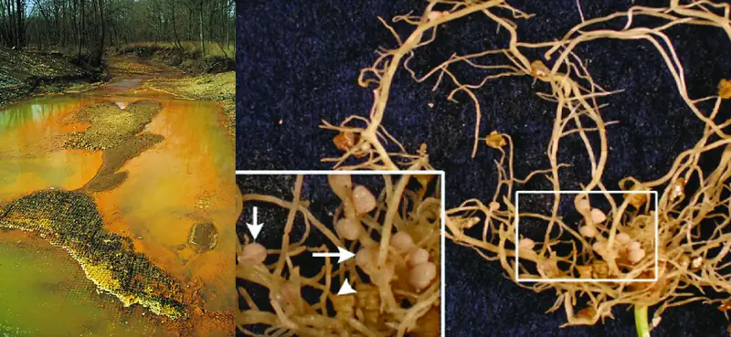
Throughout earth’s history, microbial metabolism has been a driving force behind the development and maintenance of the planet’s biosphere. Eukaryotic organisms such as plants and animals typically depend on organic molecules for energy, growth, and reproduction. Prokaryotes, on the other hand, can metabolize a wide range of organic as well as inorganic matter, from complex organic molecules like cellulose to inorganic molecules and ions such as atmospheric nitrogen (N2), molecular hydrogen (H2), sulfide (S2−), manganese (II) ions (Mn2+), ferrous iron (Fe2+), and ferric iron (Fe3+), to name a few. By metabolizing such substances, microbes chemically convert them to other forms. In some cases, microbial metabolism produces chemicals that can be harmful to other organisms; in others, it produces substances that are essential to the metabolism and survival of other life forms (Figure 8.1).
8.1 Energy, Matter, and Enzymes¶
Learning Objectives
By the end of this section, you will be able to:
- Define and describe metabolism
- Compare and contrast autotrophs and heterotrophs
- Describe the importance of oxidation-reduction reactions in metabolism
- Describe why ATP, FAD, NAD+, and NADP+ are important in a cell
- Identify the structure and structural components of an enzyme
- Describe the differences between competitive and noncompetitive enzyme inhibitors
Clinical Focus: Part 1
Hannah is a 15-month-old girl from Washington state. She is spending the summer in Gambia, where her parents are working for a nongovernmental organization. About 3 weeks after her arrival in Gambia, Hannah’s appetite began to diminish and her parents noticed that she seemed unusually sluggish, fatigued, and confused. She also seemed very irritable when she was outdoors, especially during the day. When she began vomiting, her parents figured she had caught a 24-hour virus, but when her symptoms persisted, they took her to a clinic. The local physician noticed that Hannah’s reflexes seemed abnormally slow, and when he examined her eyes with a light, she seemed unusually light sensitive. She also seemed to be experiencing a stiff neck.
- What are some possible causes of Hannah’s symptoms?
Jump to the next Clinical Focus box.
The term used to describe all of the chemical reactions inside a cell is metabolism (Figure 8.2). Cellular processes such as the building or breaking down of complex molecules occur through series of stepwise, interconnected chemical reactions called metabolic pathways. Reactions that are spontaneous and release energy are exergonic reactions, whereas endergonic reactions require energy to proceed. The term anabolism refers to those endergonic metabolic pathways involved in biosynthesis, converting simple molecular building blocks into more complex molecules, and fueled by the use of cellular energy. Conversely, the term catabolism refers to exergonic pathways that break down complex molecules into simpler ones. Molecular energy stored in the bonds of complex molecules is released in catabolic pathways and harvested in such a way that it can be used to produce high-energy molecules, which are used to drive anabolic pathways. Thus, in terms of energy and molecules, cells are continually balancing catabolism with anabolism.
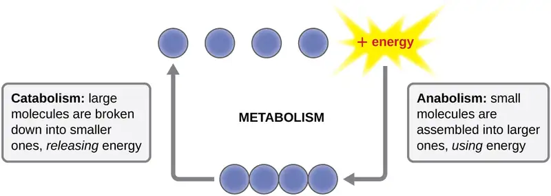
Classification by Carbon and Energy Source¶
Organisms can be identified according to the source of carbon they use for metabolism as well as their energy source. The prefixes auto- (“self”) and hetero- (“other”) refer to the origins of the carbon sources various organisms can use. Organisms that convert inorganic carbon dioxide (CO2) into organic carbon compounds are autotrophs. Plants and cyanobacteria are well-known examples of autotrophs. Conversely, heterotrophs rely on more complex organic carbon compounds as nutrients; these are provided to them initially by autotrophs. Many organisms, ranging from humans to many prokaryotes, including the well-studied Escherichia coli, are heterotrophic.
Organisms can also be identified by the energy source they use. All energy is derived from the transfer of electrons, but the source of electrons differs between various types of organisms. The prefixes photo- (“light”) and chemo- (“chemical”) refer to the energy sources that various organisms use. Those that get their energy for electron transfer from light are phototrophs, whereas chemotrophs obtain energy for electron transfer by breaking chemical bonds. There are two types of chemotrophs: organotrophs and lithotrophs. Organotrophs, including humans, fungi, and many prokaryotes, are chemotrophs that obtain energy from organic compounds. Lithotrophs (“litho” means “rock”) are chemotrophs that get energy from inorganic compounds, including hydrogen sulfide (H2S) and reduced iron. Lithotrophy is unique to the microbial world.
The strategies used to obtain both carbon and energy can be combined for the classification of organisms according to nutritional type. Most organisms are chemoheterotrophs because they use organic molecules as both their electron and carbon sources. Table 8.1 summarizes this and the other classifications.
Table 8.1
| Classifications of Organisms by Energy and Carbon Source | ||||
|---|---|---|---|---|
| Classifications | Energy Source | Carbon Source | Examples | |
| Chemotrophs | Chemoautotrophs | Chemical | Inorganic | Hydrogen-, sulfur-, iron-, nitrogen-, and carbon monoxide-oxidizing bacteria |
| Chemoheterotrophs | Chemical | Organic compounds | All animals, fungi, and most protozoa and bacteria | |
| Phototrophs | Photoautotrophs | Light | Inorganic | All plants, algae, cyanobacteria, and green and purple sulfur bacteria |
| Photoheterotrophs | Light | Organic compounds | Green and purple nonsulfur bacteria, heliobacteria | |
Check Your Understanding
- Explain the difference between catabolism and anabolism.
- Explain the difference between autotrophs and heterotrophs.
Oxidation and Reduction in Metabolism¶
The transfer of electrons between molecules is important because most of the energy stored in atoms and used to fuel cell functions is in the form of high-energy electrons. The transfer of energy in the form of electrons allows the cell to transfer and use energy incrementally; that is, in small packages rather than a single, destructive burst. Reactions that remove electrons from donor molecules, leaving them oxidized, are oxidation reactions; those that add electrons to acceptor molecules, leaving them reduced, are reduction reactions. Because electrons can move from one molecule to another, oxidation and reduction occur in tandem. These pairs of reactions are called oxidation-reduction reactions, or redox reactions.
Energy Carriers: NAD+, NADP+, FAD, and ATP¶
The energy released from the breakdown of the chemical bonds within nutrients can be stored either through the reduction of electron carriers or in the bonds of adenosine triphosphate (ATP). In living systems, a small class of compounds functions as mobile electron carriers, molecules that bind to and shuttle high-energy electrons between compounds in pathways. The principal electron carriers we will consider originate from the B vitamin group and are derivatives of nucleotides; they are nicotinamide adenine dinucleotide, nicotine adenine dinucleotide phosphate, and flavin adenine dinucleotide. These compounds can be easily reduced or oxidized. Nicotinamide adenine dinucleotide (NAD+/NADH) is the most common mobile electron carrier used in catabolism. NAD+ is the oxidized form of the molecule; NADH is the reduced form of the molecule. Nicotine adenine dinucleotide phosphate (NADP+), the oxidized form of an NAD+ variant that contains an extra phosphate group, is another important electron carrier; it forms NADPH when reduced. The oxidized form of flavin adenine dinucleotide is FAD, and its reduced form is FADH2. Both NAD+/NADH and FAD/FADH2 are extensively used in energy extraction from sugars during catabolism in chemoheterotrophs, whereas NADP+/NADPH plays an important role in anabolic reactions and photosynthesis. Collectively, FADH2, NADH, and NADPH are often referred to as having reducing power due to their ability to donate electrons to various chemical reactions.
A living cell must be able to handle the energy released during catabolism in a way that enables the cell to store energy safely and release it for use only as needed. Living cells accomplish this by using the compound adenosine triphosphate (ATP). ATP is often called the “energy currency” of the cell, and, like currency, this versatile compound can be used to fill any energy need of the cell. At the heart of ATP is a molecule of adenosine monophosphate (AMP), which is composed of an adenine molecule bonded to a ribose molecule and a single phosphate group. Ribose is a five-carbon sugar found in RNA, and AMP is one of the nucleotides in RNA. The addition of a second phosphate group to this core molecule results in the formation of adenosine diphosphate (ADP); the addition of a third phosphate group forms ATP (Figure 8.3). Adding a phosphate group to a molecule, a process called phosphorylation, requires energy. Phosphate groups are negatively charged and thus repel one another when they are arranged in series, as they are in ADP and ATP. This repulsion makes the ADP and ATP molecules inherently unstable. Thus, the bonds between phosphate groups (one in ADP and two in ATP) are called high-energy phosphate bonds. When these high-energy bonds are broken to release one phosphate (called inorganic phosphate [Pi]) or two connected phosphate groups (called pyrophosphate [PPi]) from ATP through a process called dephosphorylation, energy is released to drive endergonic reactions (Figure 8.4).
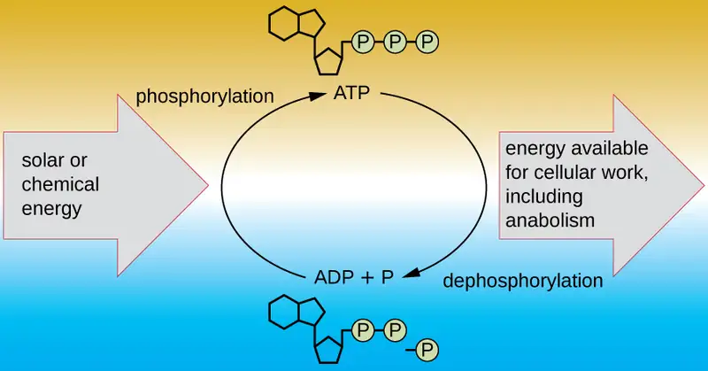
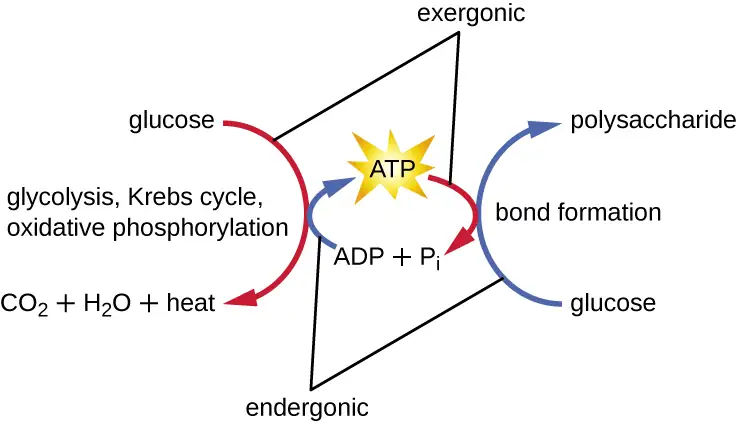
Check Your Understanding
- What is the function of an electron carrier?
Enzyme Structure and Function¶
A substance that helps speed up a chemical reaction is a catalyst. Catalysts are not used or changed during chemical reactions and, therefore, are reusable. Whereas inorganic molecules may serve as catalysts for a wide range of chemical reactions, proteins called enzymes serve as catalysts for biochemical reactions inside cells. Enzymes thus play an important role in controlling cellular metabolism.
An enzyme functions by lowering the activation energy of a chemical reaction inside the cell. Activation energy is the energy needed to form or break chemical bonds and convert reactants to products (Figure 8.5). Enzymes lower the activation energy by binding to the reactant molecules and holding them in such a way as to speed up the reaction.
The chemical reactants to which an enzyme binds are called substrates, and the location within the enzyme where the substrate binds is called the enzyme’s active site. The characteristics of the amino acids near the active site create a very specific chemical environment within the active site that induces suitability to binding, albeit briefly, to a specific substrate (or substrates). Due to this jigsaw puzzle-like match between an enzyme and its substrates, enzymes are known for their specificity. In fact, as an enzyme binds to its substrate(s), the enzyme structure changes slightly to find the best fit between the transition state (a structural intermediate between the substrate and product) and the active site, just as a rubber glove molds to a hand inserted into it. This active-site modification in the presence of substrate, along with the simultaneous formation of the transition state, is called induced fit (Figure 8.6). Overall, there is a specifically matched enzyme for each substrate and, thus, for each chemical reaction; however, there is some flexibility as well. Some enzymes have the ability to act on several different structurally related substrates.
![A graph with reaction path on the X axis and energy on the Y axis. A green line shows the reaction without a catalyst. This line starts flat at first and then increases. The flat portion is labeled reactants. The level of this increase is the activation energy (X to Y). The line then drops to a point above where the reactant line was; this new flat line is labeled products. The distance from the products to the peak of the graph is labeled activation energy (Y to X). The difference between the height of the reactants and the products is delta H. A red line shows this same reaction with a catalyst. The reactant and product levels are identical to the green line, but the height of the peak is much lower indicating decreased activation energy.](img/osc-microbio-08-01-enzymes.webp)
![Diagram of enzyme. 1: substrate enters the active site of the enzyme. The drawing shows a relatively spherical enzyme with an opening (labeled active site) that fits the shape of the substrate. 2: Enzyme/substrate complex forms. The diagram shows the substrate binding to the opening in the enzyme and the enzyme changing shape slightly to better fit the substrate. 3: Substrate is converted to products. This is shown by the substrate breaking in half. 4: Products leave the active site of the enzyme.](img/osc-microbio-08-01-inducedfit.webp)
Enzymes are subject to influences by local environmental conditions such as pH, substrate concentration, and temperature. Although increasing the environmental temperature generally increases reaction rates, enzyme catalyzed or otherwise, increasing or decreasing the temperature outside of an optimal range can affect chemical bonds within the active site, making them less well suited to bind substrates. High temperatures will eventually cause enzymes, like other biological molecules, to denature, losing their three-dimensional structure and function. Enzymes are also suited to function best within a certain pH range, and, as with temperature, extreme environmental pH values (acidic or basic) can cause enzymes to denature. Active-site amino-acid side chains have their own acidic or basic properties that are optimal for catalysis and, therefore, are sensitive to changes in pH.
Another factor that influences enzyme activity is substrate concentration: Enzyme activity is increased at higher concentrations of substrate until it reaches a saturation point at which the enzyme can bind no additional substrate. Overall, enzymes are optimized to work best under the environmental conditions in which the organisms that produce them live. For example, while microbes that inhabit hot springs have enzymes that work best at high temperatures, human pathogens have enzymes that work best at 37°C. Similarly, while enzymes produced by most organisms work best at a neutral pH, microbes growing in acidic environments make enzymes optimized to low pH conditions, allowing for their growth at those conditions.
Many enzymes do not work optimally, or even at all, unless bound to other specific nonprotein helper molecules, either temporarily through ionic or hydrogen bonds or permanently through stronger covalent bonds. Binding to these molecules promotes optimal conformation and function for their respective enzymes. Two types of helper molecules are cofactors and coenzymes. Cofactors are inorganic ions such as iron (Fe2+) and magnesium (Mg2+) that help stabilize enzyme conformation and function. One example of an enzyme that requires a metal ion as a cofactor is the enzyme that builds DNA molecules, DNA polymerase, which requires a bound zinc ion (Zn2+) to function.
Coenzymes are organic helper molecules that are required for enzyme action. Like enzymes, they are not consumed and, hence, are reusable. The most common sources of coenzymes are dietary vitamins. Some vitamins are precursors to coenzymes and others act directly as coenzymes.
Some cofactors and coenzymes, like coenzyme A (CoA), often bind to the enzyme’s active site, aiding in the chemistry of the transition of a substrate to a product (Figure 8.7). In such cases, an enzyme lacking a necessary cofactor or coenzyme is called an apoenzyme and is inactive. Conversely, an enzyme with the necessary associated cofactor or coenzyme is called a holoenzyme and is active. NADH and ATP are also both examples of commonly used coenzymes that provide high-energy electrons or phosphate groups, respectively, which bind to enzymes, thereby activating them.
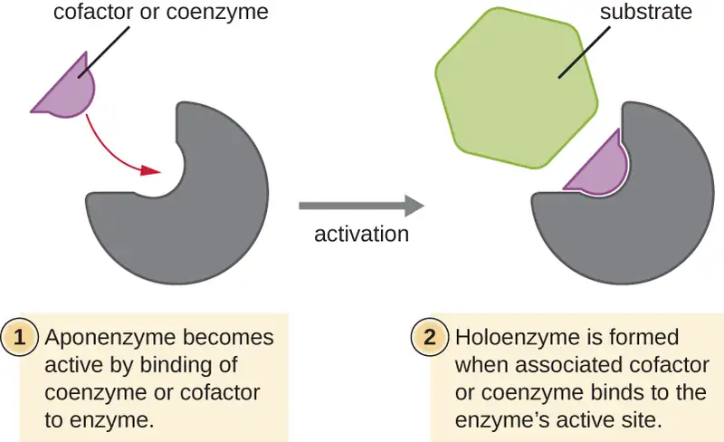
Check Your Understanding
- What role do enzymes play in a chemical reaction?
Enzyme Inhibitors¶
Enzymes can be regulated in ways that either promote or reduce their activity. There are many different kinds of molecules that inhibit or promote enzyme function, and various mechanisms exist for doing so (Figure 8.8). A competitive inhibitor is a molecule similar enough to a substrate that it can compete with the substrate for binding to the active site by simply blocking the substrate from binding. For a competitive inhibitor to be effective, the inhibitor concentration needs to be approximately equal to the substrate concentration. Sulfa drugs provide a good example of competitive competition. They are used to treat bacterial infections because they bind to the active site of an enzyme within the bacterial folic acid synthesis pathway. When present in a sufficient dose, a sulfa drug prevents folic acid synthesis, and bacteria are unable to grow because they cannot synthesize DNA, RNA, and proteins. Humans are unaffected because we obtain folic acid from our diets.
On the other hand, a noncompetitive (allosteric) inhibitor binds to the enzyme at an allosteric site, a location other than the active site, and still manages to block substrate binding to the active site by inducing a conformational change that reduces the affinity of the enzyme for its substrate (Figure 8.9). Because only one inhibitor molecule is needed per enzyme for effective inhibition, the concentration of inhibitors needed for noncompetitive inhibition is typically much lower than the substrate concentration.
In addition to allosteric inhibitors, there are allosteric activators that bind to locations on an enzyme away from the active site, inducing a conformational change that increases the affinity of the enzyme’s active site(s) for its substrate(s).
Allosteric control is an important mechanism of regulation of metabolic pathways involved in both catabolism and anabolism. In a most efficient and elegant way, cells have evolved also to use the products of their own metabolic reactions for feedback inhibition of enzyme activity. Feedback inhibition involves the use of a pathway product to regulate its own further production. The cell responds to the abundance of specific products by slowing production during anabolic or catabolic reactions (Figure 8.9).
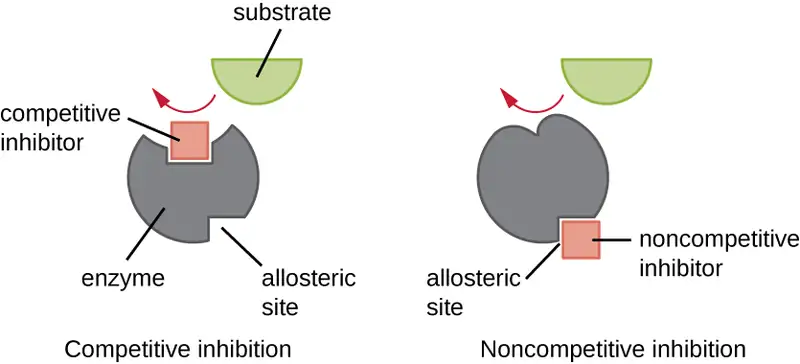
![Diagrams of three different control mechanisms. Diagram of allosteric inhibition. An enzyme with an active site at one end and an allosteric site at the other. When the inhibitor is bound, the shape of the active site is changes so the substrate cannot bind. When the inhibitor is not bound the shape of the active site does fit the active site. Allosteric activation shows an active site that does not fit the substrate until the activator binds. Once the activator is bound, the active site now does fit the substrate. Feedback inhibition shows a chain of enzymes; enzyme 1 binds a substrate that becomes intermediate substrate A. Intermediate substrate A binds to enzyme 2 and is converted into intermediate substrate B. Intermediate substrate B binds to enzyme 3 and is converted into the end product. The end product binds to enzyme 1 and prevents the substrate from binding to that enzyme.](img/osc-microbio-08-01-inhact.webp)
Check Your Understanding
- Explain the difference between a competitive inhibitor and a noncompetitive inhibitor.
8.2 Catabolism of Carbohydrates¶
Learning Objectives
By the end of this section, you will be able to:
- Describe why glycolysis is not oxygen dependent
- Define and describe the net yield of three-carbon molecules, ATP, and NADH from glycolysis
- Explain how three-carbon pyruvate molecules are converted into two-carbon acetyl groups that can be funneled into the Krebs cycle.
- Define and describe the net yield of CO2, GTP/ATP, FADH2, and NADH from the Krebs cycle
- Explain how intermediate carbon molecules of the Krebs cycle can be used in a cell
Extensive enzyme pathways exist for breaking down carbohydrates to capture energy in ATP bonds. In addition, many catabolic pathways produce intermediate molecules that are also used as building blocks for anabolism. Understanding these processes is important for several reasons. First, because the main metabolic processes involved are common to a wide range of chemoheterotrophic organisms, we can learn a great deal about human metabolism by studying metabolism in more easily manipulated bacteria like E. coli. Second, because animal and human pathogens are also chemoheterotrophs, learning about the details of metabolism in these bacteria, including possible differences between bacterial and human pathways, is useful for the diagnosis of pathogens as well as for the discovery of antimicrobial therapies targeting specific pathogens. Last, learning specifically about the pathways involved in chemoheterotrophic metabolism also serves as a basis for comparing other more unusual metabolic strategies used by microbes. Although the chemical source of electrons initiating electron transfer is different between chemoheterorophs and chemoautotrophs, many similar processes are used in both types of organisms.
The typical example used to introduce concepts of metabolism to students is carbohydrate catabolism. For chemoheterotrophs, our examples of metabolism start with the catabolism of polysaccharides such as glycogen, starch, or cellulose. Enzymes such as amylase, which breaks down glycogen or starch, and cellulases, which break down cellulose, can cause the hydrolysis of glycosidic bonds between the glucose monomers in these polymers, releasing glucose for further catabolism.
Glycolysis¶
For bacteria, eukaryotes, and most archaea, glycolysis is the most common pathway for the catabolism of glucose; it produces energy, reduced electron carriers, and precursor molecules for cellular metabolism. Every living organism carries out some form of glycolysis, suggesting this mechanism is an ancient universal metabolic process. The process itself does not use oxygen; however, glycolysis can be coupled with additional metabolic processes that are either aerobic or anaerobic. Glycolysis takes place in the cytoplasm of prokaryotic and eukaryotic cells. It begins with a single six-carbon glucose molecule and ends with two molecules of a three-carbon sugar called pyruvate. Pyruvate may be broken down further after glycolysis to harness more energy through aerobic or anaerobic respiration, but many organisms, including many microbes, may be unable to respire; for these organisms, glycolysis may be their only source of generating ATP.
The type of glycolysis found in animals and that is most common in microbes is the Embden-Meyerhof-Parnas (EMP) pathway, named after Gustav Embden (1874–1933), Otto Meyerhof (1884–1951), and Jakub Parnas (1884–1949). Glycolysis using the EMP pathway consists of two distinct phases (Figure 8.10). The first part of the pathway, called the energy investment phase, uses energy from two ATP molecules to modify a glucose molecule so that the six-carbon sugar molecule can be split evenly into two phosphorylated three-carbon molecules called glyceraldehyde 3-phosphate (G3P). The second part of the pathway, called the energy payoff phase, extracts energy by oxidizing G3P to pyruvate, producing four ATP molecules and reducing two molecules of NAD+ to two molecules of NADH, using electrons that originated from glucose. (A discussion and illustration of the full EMP pathway with chemical structures and enzyme names appear in Appendix C.)
The ATP molecules produced during the energy payoff phase of glycolysis are formed by substrate-level phosphorylation (Figure 8.11), one of two mechanisms for producing ATP. In substrate-level phosphorylation, a phosphate group is removed from an organic molecule and is directly transferred to an available ADP molecule, producing ATP. During glycolysis, high-energy phosphate groups from the intermediate molecules are added to ADP to make ATP.
Overall, in this process of glycolysis, the net gain from the breakdown of a single glucose molecule is:
- two ATP molecules
- two NADH molecule, and
- two pyruvate molecules.
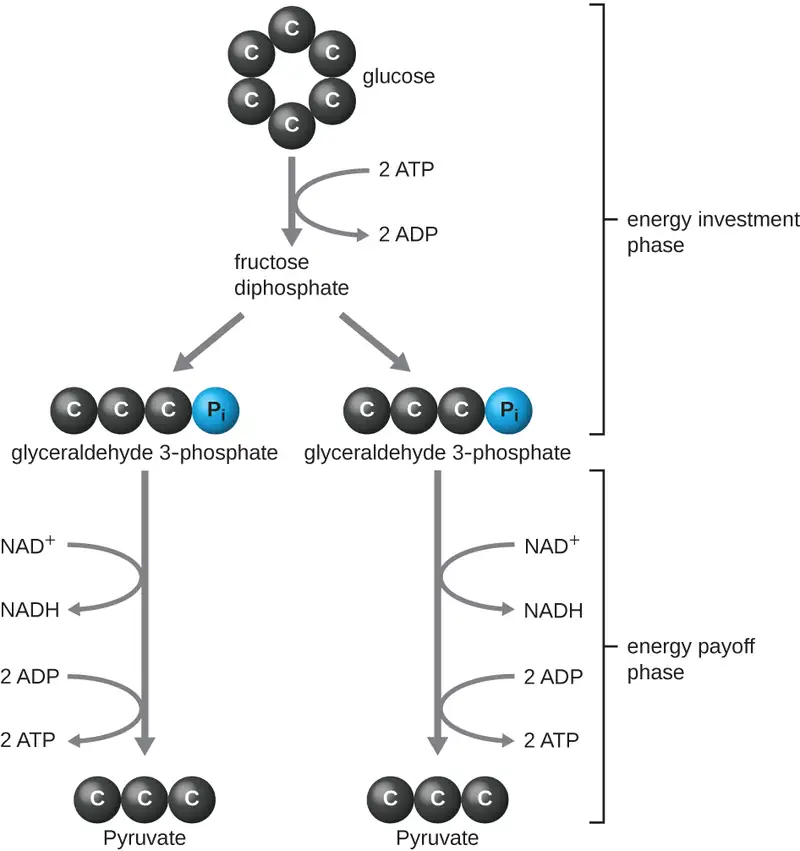
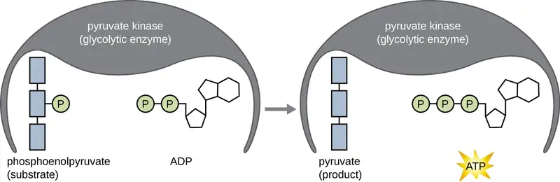
Other Glycolytic Pathways¶
When we refer to glycolysis, unless otherwise indicated, we are referring to the EMP pathway used by animals and many bacteria. However, some prokaryotes use alternative glycolytic pathways. One important alternative is the Entner-Doudoroff (ED) pathway, named after its discoverers Nathan Entner and Michael Doudoroff (1911–1975). Although some bacteria, including the opportunistic gram-negative pathogen Pseudomonas aeruginosa, contain only the ED pathway for glycolysis, other bacteria, like E. coli, have the ability to use either the ED pathway or the EMP pathway.
A third type of glycolytic pathway that occurs in all cells, which is quite different from the previous two pathways, is the pentose phosphate pathway (PPP) also called the phosphogluconate pathway or the hexose monophosphate shunt. Evidence suggests that the PPP may be the most ancient universal glycolytic pathway. The intermediates from the PPP are used for the biosynthesis of nucleotides and amino acids. Therefore, this glycolytic pathway may be favored when the cell has need for nucleic acid and/or protein synthesis, respectively. A discussion and illustration of the complete ED pathway and PPP with chemical structures and enzyme names appear in Appendix C.
Check Your Understanding
- When might an organism use the ED pathway or the PPP for glycolysis?
Transition Reaction, Coenzyme A, and the Krebs Cycle¶
Glycolysis produces pyruvate, which can be further oxidized to capture more energy. For pyruvate to enter the next oxidative pathway, it must first be decarboxylated by the enzyme complex pyruvate dehydrogenase to a two-carbon acetyl group in the transition reaction, also called the bridge reaction (see Appendix C and Figure 8.12). In the transition reaction, electrons are also transferred to NAD+ to form NADH. To proceed to the next phase of this metabolic process, the comparatively tiny two-carbon acetyl must be attached to a very large carrier compound called coenzyme A (CoA). The transition reaction occurs in the mitochondrial matrix of eukaryotes; in prokaryotes, it occurs in the cytoplasm because prokaryotes lack membrane-enclosed organelles.
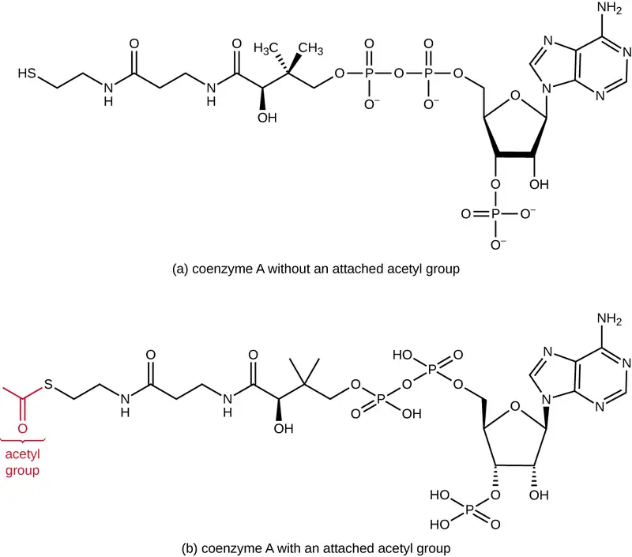
The Krebs cycle transfers remaining electrons from the acetyl group produced during the transition reaction to electron carrier molecules, thus reducing them. The Krebs cycle also occurs in the cytoplasm of prokaryotes along with glycolysis and the transition reaction, but it takes place in the mitochondrial matrix of eukaryotic cells where the transition reaction also occurs. The Krebs cycle is named after its discoverer, British scientist Hans Adolf Krebs (1900–1981) and is also called the citric acid cycle, or the tricarboxylic acid cycle (TCA) because citric acid has three carboxyl groups in its structure. Unlike glycolysis, the Krebs cycle is a closed loop: The last part of the pathway regenerates the compound used in the first step (Figure 8.13). The eight steps of the cycle are a series of chemical reactions that capture the two-carbon acetyl group (the CoA carrier does not enter the Krebs cycle) from the transition reaction, which is added to a four-carbon intermediate in the Krebs cycle, producing the six-carbon intermediate citric acid (giving the alternate name for this cycle). As one turn of the cycle returns to the starting point of the four-carbon intermediate, the cycle produces two CO2 molecules, one ATP molecule (or an equivalent, such as guanosine triphosphate [GTP]) produced by substrate-level phosphorylation, and three molecules of NADH and one of FADH2. (A discussion and detailed illustration of the full Krebs cycle appear in Appendix C.)
Although many organisms use the Krebs cycle as described as part of glucose metabolism, several of the intermediate compounds in the Krebs cycle can be used in synthesizing a wide variety of important cellular molecules, including amino acids, chlorophylls, fatty acids, and nucleotides; therefore, the cycle is both anabolic and catabolic (Figure 8.14).
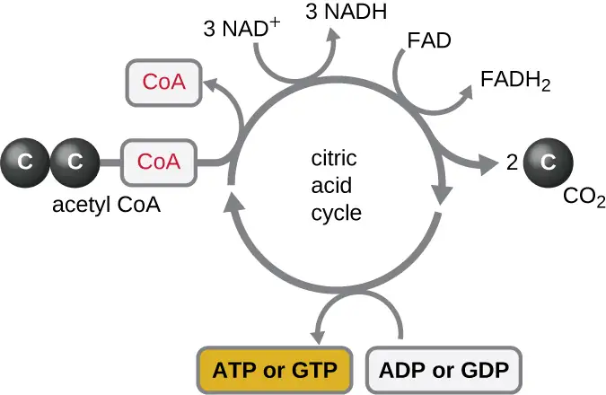
![Details of the Kreb’s cycle. Acetyl-CoA (C2) enter at the top (along with water). SH-CoA leaves. The 2 carbons of Acetyl-CoA bind with the 4 carbons of oxaloacetate for form citrate (C6). An arrow shows that this can be used to build fatty acids and sterols. Citrate is converted to isocitrate (C6). Isocitrate is converted to alpha-ketoglutarate. This step builds 1 NADH/H+ from NADH and releases 1 CO2. Alpha-ketoglutarate can be used to build glutamate which can be used to build other amino acids and nucleotides. Alpha-ketoglutarate is converted to succinyl CoA (C4) by the addition of SH-CoA. This step builds one NADH/H+ from NAH+ and releases a CO2. Succinyl CoA can be used to build porphyrins, heme, and chlorophyll. Succinyl-CoA is converted to Succinate (C4). This step releases SH-CO and builds ATP or GTP from ADP or GDP and Pi. Succinate is converted to fumarate (C4). This step produces FADH2 from FAD. Fumarate is converted to malate (C4) with the addition of water. Malate is converted to oxaloacetate. This step produces NADH/H+ from NAD+. Oxoaloacetate can be used to build asparate which can be used to build nucleotides and other amino acids. Oxaloacetate can also continue in another cycle of the Kreb’s cycle](img/osc-microbio-08-02-krebsusage.webp)
8.3 Cellular Respiration¶
Learning Objectives
By the end of this section, you will be able to:
- Compare and contrast the electron transport system location and function in a prokaryotic cell and a eukaryotic cell
- Compare and contrast the differences between substrate-level and oxidative phosphorylation
- Explain the relationship between chemiosmosis and proton motive force
- Describe the function and location of ATP synthase in a prokaryotic versus eukaryotic cell
- Compare and contrast aerobic and anaerobic respiration
We have just discussed two pathways in glucose catabolism—glycolysis and the Krebs cycle—that generate ATP by substrate-level phosphorylation. Most ATP, however, is generated during a separate process called oxidative phosphorylation, which occurs during cellular respiration. Cellular respiration begins when electrons are transferred from NADH and FADH2—made in glycolysis, the transition reaction, and the Krebs cycle—through a series of chemical reactions to a final inorganic electron acceptor (either oxygen in aerobic respiration or non-oxygen inorganic molecules in anaerobic respiration). These electron transfers take place on the inner part of the cell membrane of prokaryotic cells or in specialized protein complexes in the inner membrane of the mitochondria of eukaryotic cells. The energy of the electrons is harvested to generate an electrochemical gradient across the membrane, which is used to make ATP by oxidative phosphorylation.
Electron Transport System¶
The electron transport system (ETS) is the last component involved in the process of cellular respiration; it comprises a series of membrane-associated protein complexes and associated mobile accessory electron carriers (Figure 8.15). Electron transport is a series of chemical reactions that resembles a bucket brigade in that electrons from NADH and FADH2 are passed rapidly from one ETS electron carrier to the next. These carriers can pass electrons along in the ETS because of their redox potential. For a protein or chemical to accept electrons, it must have a more positive redox potential than the electron donor. Therefore, electrons move from electron carriers with more negative redox potential to those with more positive redox potential. The four major classes of electron carriers involved in both eukaryotic and prokaryotic electron transport systems are the cytochromes, flavoproteins, iron-sulfur proteins, and the quinones.
In aerobic respiration, the final electron acceptor (i.e., the one having the most positive redox potential) at the end of the ETS is an oxygen molecule (O2) that becomes reduced to water (H2O) by the final ETS carrier. This electron carrier, cytochrome oxidase, differs between bacterial types and can be used to differentiate closely related bacteria for diagnoses. For example, the gram-negative opportunist Pseudomonas aeruginosa and the gram-negative cholera-causing Vibrio cholerae use cytochrome c oxidase, which can be detected by the oxidase test, whereas other gram-negative Enterobacteriaceae, like E. coli, are negative for this test because they produce different cytochrome oxidase types.
There are many circumstances under which aerobic respiration is not possible, including any one or more of the following:
- The cell lacks genes encoding an appropriate cytochrome oxidase for transferring electrons to oxygen at the end of the electron transport system.
- The cell lacks genes encoding enzymes to minimize the severely damaging effects of dangerous oxygen radicals produced during aerobic respiration, such as hydrogen peroxide (H2O2) or superoxide \(({\text{O}_{2}}^{-}).\)
- The cell lacks a sufficient amount of oxygen to carry out aerobic respiration.
One possible alternative to aerobic respiration is anaerobic respiration, using an inorganic molecule other than oxygen as a final electron acceptor. There are many types of anaerobic respiration found in bacteria and archaea. Denitrifiers are important soil bacteria that use nitrate \(({\text{NO}_{3}}^{-})\) and nitrite \(({\text{NO}_{2}}^{-})\) as final electron acceptors, producing nitrogen gas (N2). Many aerobically respiring bacteria, including E. coli, switch to using nitrate as a final electron acceptor and producing nitrite when oxygen levels have been depleted.
Microbes using anaerobic respiration commonly have an intact Krebs cycle, so these organisms can access the energy of the NADH and FADH2 molecules formed. However, anaerobic respirers use altered ETS carriers encoded by their genomes, including distinct complexes for electron transfer to their final electron acceptors. Smaller electrochemical gradients are generated from these electron transfer systems, so less ATP is formed through anaerobic respiration.
Check Your Understanding
- Do both aerobic respiration and anaerobic respiration use an electron transport chain?
Chemiosmosis, Proton Motive Force, and Oxidative Phosphorylation¶
In each transfer of an electron through the ETS, the electron loses energy, but with some transfers, the energy is stored as potential energy by using it to pump hydrogen ions (H+) across a membrane. In prokaryotic cells, H+ is pumped to the outside of the cytoplasmic membrane (called the periplasmic space in gram-negative and gram-positive bacteria), and in eukaryotic cells, they are pumped from the mitochondrial matrix across the inner mitochondrial membrane into the intermembrane space. There is an uneven distribution of H+ across the membrane that establishes an electrochemical gradient because H+ ions are positively charged (electrical) and there is a higher concentration (chemical) on one side of the membrane. This electrochemical gradient formed by the accumulation of H+ (also known as a proton) on one side of the membrane compared with the other is referred to as the proton motive force (PMF). Because the ions involved are H+, a pH gradient is also established, with the side of the membrane having the higher concentration of H+ being more acidic. Beyond the use of the PMF to make ATP, as discussed in this chapter, the PMF can also be used to drive other energetically unfavorable processes, including nutrient transport and flagella rotation for motility.
The potential energy of this electrochemical gradient generated by the ETS causes the H+ to diffuse across a membrane (the plasma membrane in prokaryotic cells and the inner membrane in mitochondria in eukaryotic cells). This flow of hydrogen ions across the membrane, called chemiosmosis, must occur through a channel in the membrane via a membrane-bound enzyme complex called ATP synthase (Figure 8.15). The tendency for movement in this way is much like water accumulated on one side of a dam, moving through the dam when opened. ATP synthase (like a combination of the intake and generator of a hydroelectric dam) is a complex protein that acts as a tiny generator, turning by the force of the H+ diffusing through the enzyme, down their electrochemical gradient from where there are many mutually repelling H+ to where there are fewer H+. In prokaryotic cells, H+ flows from the outside of the cytoplasmic membrane into the cytoplasm, whereas in eukaryotic mitochondria, H+ flows from the intermembrane space to the mitochondrial matrix. The turning of the parts of this molecular machine regenerates ATP from ADP and inorganic phosphate (Pi) by oxidative phosphorylation, a second mechanism for making ATP that harvests the potential energy stored within an electrochemical gradient.
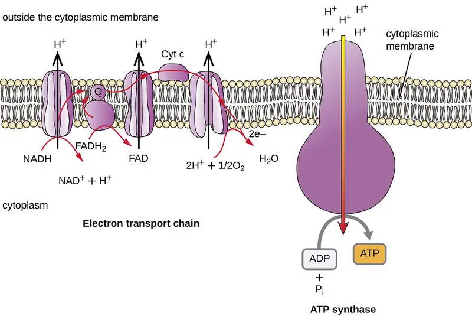
The number of ATP molecules generated from the catabolism of glucose varies. For example, the number of hydrogen ions that the electron transport system complexes can pump through the membrane varies between different species of organisms. In aerobic respiration in mitochondria, the passage of electrons from one molecule of NADH generates enough proton motive force to make three ATP molecules by oxidative phosphorylation, whereas the passage of electrons from one molecule of FADH2 generates enough proton motive force to make only two ATP molecules. Thus, the 10 NADH molecules made per glucose during glycolysis, the transition reaction, and the Krebs cycle carry enough energy to make 30 ATP molecules, whereas the two FADH2 molecules made per glucose during these processes provide enough energy to make four ATP molecules. Overall, the theoretical maximum yield of ATP made during the complete aerobic respiration of glucose is 38 molecules, with four being made by substrate-level phosphorylation and 34 being made by oxidative phosphorylation (Figure 8.16). In reality, the total ATP yield is usually less, ranging from one to 34 ATP molecules, depending on whether the cell is using aerobic respiration or anaerobic respiration; in eukaryotic cells, some energy is expended to transport intermediates from the cytoplasm into the mitochondria, affecting ATP yield.
Figure 8.16 summarizes the theoretical maximum yields of ATP from various processes during the complete aerobic respiration of one glucose molecule.
![In glycolysis (EMP) carbon moves from glucose (6C) to 2 pyruvate (3C). The molecules of reduced coenzyme produced are 2 NADH. The net ATP molecules made by substrate level phosphorylation is 2 ATP. The net ATP molecules made by oxidative phosphorylation is 6 ATP from 2 NADH. The theoretical maximum yield of ATP molecules is 8. In the transition reaction carbon moves from 2 pyruvate (3C) to 2 acetyl (2C) + 2 CO2. The molecules of reduced coenzyme produced are 2 NADH. The net ATP molecules made by substrate level phosphorylation is 0 ATP. The net ATP molecules made by oxidative phosphorylation is 6 ATP from 2 NADH. The theoretical maximum yield of ATP molecules is 6. In the Krebs cycle carbon moves from 2 acetyl (2C) to 4 CO2. The molecules of reduced coenzyme produced are 6 NADH and 2 FADH2. The net ATP molecules made by substrate level phosphorylation is 2 ATP. The net ATP molecules made by oxidative phosphorylation is 18 ATP from 6 NADH and 4 ATP from 2 FADH2. The theoretical maximum yield of ATP molecules is 24. In total carbon moves from glucose (6C) to 6 CO2. The molecules of reduced coenzyme produced are 10 NADH and 2 FADH2. The net ATP molecules made by substrate level phosphorylation is 4 ATP. The net ATP molecules made by oxidative phosphorylation is 34 ATP. The theoretical maximum yield of ATP molecules is 38.](img/osc-microbio-08-03-atpyield.webp)
Check Your Understanding
- What are the functions of the proton motive force?
8.4 Fermentation¶
Learning Objectives
By the end of this section, you will be able to:
- Define fermentation and explain why it does not require oxygen
- Describe the fermentation pathways and their end products and give examples of microorganisms that use these pathways
- Compare and contrast fermentation and anaerobic respiration
Many cells are unable to carry out respiration because of one or more of the following circumstances:
- The cell lacks a sufficient amount of any appropriate, inorganic, final electron acceptor to carry out cellular respiration.
- The cell lacks genes to make appropriate complexes and electron carriers in the electron transport system.
- The cell lacks genes to make one or more enzymes in the Krebs cycle.
Whereas lack of an appropriate inorganic final electron acceptor is environmentally dependent, the other two conditions are genetically determined. Thus, many prokaryotes, including members of the clinically important genus Streptococcus, are permanently incapable of respiration, even in the presence of oxygen. Conversely, many prokaryotes are facultative, meaning that, should the environmental conditions change to provide an appropriate inorganic final electron acceptor for respiration, organisms containing all the genes required to do so will switch to cellular respiration for glucose metabolism because respiration allows for much greater ATP production per glucose molecule.
If respiration does not occur, NADH must be reoxidized to NAD+ for reuse as an electron carrier for glycolysis, the cell’s only mechanism for producing any ATP, to continue. Some living systems use an organic molecule (commonly pyruvate) as a final electron acceptor through a process called fermentation. Fermentation does not involve an electron transport system and does not directly produce any additional ATP beyond that produced during glycolysis by substrate-level phosphorylation. Organisms carrying out fermentation, called fermenters, produce a maximum of two ATP molecules per glucose during glycolysis. Table 8.2 compares the final electron acceptors and methods of ATP synthesis in aerobic respiration, anaerobic respiration, and fermentation. Note that the number of ATP molecules shown for glycolysis assumes the Embden-Meyerhof-Parnas pathway. The number of ATP molecules made by substrate-level phosphorylation (SLP) versus oxidative phosphorylation (OP) are indicated.
Table 8.2
| Comparison of Respiration Versus Fermentation | ||||
|---|---|---|---|---|
| Type of Metabolism | Example | Final Electron Acceptor | Pathways Involved in ATP Synthesis (Type of Phosphorylation) | Maximum Yield of ATP Molecules |
| Aerobic respiration | Staphylococcus aureus | \(\text{O}_{2}\) | EMP glycolysis (SLP) Krebs cycle (SLP) Electron transport and chemiosmosis (OP): |
2 2 34 |
| Total | 38 | |||
| Anaerobic respiration | Paracoccus denitrificans | \({\text{NO}_{3}}^{-},{\:\text{SO}}_{4}^{-2},{\:\text{Fe}}^{+3},{\:\text{CO}}_{2},\) other inorganics |
EMP glycolysis (SLP) Krebs cycle (SLP) Electron transport and chemiosmosis (OP): |
2 2 1–32 |
| Total | 5–36 | |||
| Fermentation | Candida albicans | Organics (usually pyruvate) |
EMP glycolysis (SLP) Fermentation |
2 0 |
| Total | 2 | |||
Microbial fermentation processes have been manipulated by humans and are used extensively in the production of various foods and other commercial products, including pharmaceuticals. Microbial fermentation can also be useful for identifying microbes for diagnostic purposes.
Fermentation by some bacteria, like those in yogurt and other soured food products, and by animals in muscles during oxygen depletion, is lactic acid fermentation. The chemical reaction of lactic acid fermentation is as follows:
Bacteria of several gram-positive genera, including Lactobacillus, Leuconostoc, and Streptococcus, are collectively known as the lactic acid bacteria (LAB), and various strains are important in food production. During yogurt and cheese production, the highly acidic environment generated by lactic acid fermentation denatures proteins contained in milk, causing it to solidify. When lactic acid is the only fermentation product, the process is said to be homolactic fermentation; such is the case for Lactobacillus delbrueckii and S. thermophiles used in yogurt production. However, many bacteria perform heterolactic fermentation, producing a mixture of lactic acid, ethanol and/or acetic acid, and CO2 as a result, because of their use of the branched pentose phosphate pathway instead of the EMP pathway for glycolysis. One important heterolactic fermenter is Leuconostoc mesenteroides, which is used for souring vegetables like cucumbers and cabbage, producing pickles and sauerkraut, respectively.
Lactic acid bacteria are also important medically. The production of low pH environments within the body inhibits the establishment and growth of pathogens in these areas. For example, the vaginal microbiota is composed largely of lactic acid bacteria, but when these bacteria are reduced, yeast can proliferate, causing a yeast infection. Additionally, lactic acid bacteria are important in maintaining the health of the gastrointestinal tract and, as such, are the primary component of probiotics.
Another familiar fermentation process is alcohol fermentation, which produces ethanol. The ethanol fermentation reaction is shown in Figure 8.17. In the first reaction, the enzyme pyruvate decarboxylase removes a carboxyl group from pyruvate, releasing CO2 gas while producing the two-carbon molecule acetaldehyde. The second reaction, catalyzed by the enzyme alcohol dehydrogenase, transfers an electron from NADH to acetaldehyde, producing ethanol and NAD+. The ethanol fermentation of pyruvate by the yeast Saccharomyces cerevisiae is used in the production of alcoholic beverages and also makes bread products rise due to CO2 production. Outside of the food industry, ethanol fermentation of plant products is important in biofuel production.
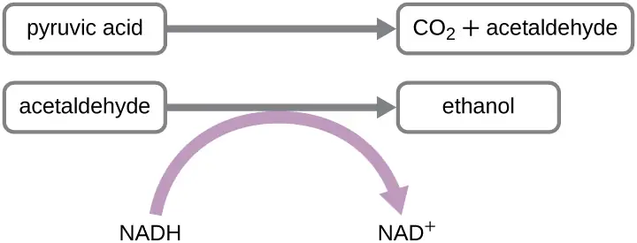
Beyond lactic acid fermentation and alcohol fermentation, many other fermentation methods occur in prokaryotes, all for the purpose of ensuring an adequate supply of NAD+ for glycolysis (Table 8.3). Without these pathways, glycolysis would not occur and no ATP would be harvested from the breakdown of glucose. It should be noted that most forms of fermentation besides homolactic fermentation produce gas, commonly CO2 and/or hydrogen gas. Many of these different types of fermentation pathways are also used in food production and each results in the production of different organic acids, contributing to the unique flavor of a particular fermented food product. The propionic acid produced during propionic acid fermentation contributes to the distinctive flavor of Swiss cheese, for example.
Several fermentation products are important commercially outside of the food industry. For example, chemical solvents such as acetone and butanol are produced during acetone-butanol-ethanol fermentation. Complex organic pharmaceutical compounds used in antibiotics (e.g., penicillin), vaccines, and vitamins are produced through mixed acid fermentation. Fermentation products are used in the laboratory to differentiate various bacteria for diagnostic purposes. For example, enteric bacteria are known for their ability to perform mixed acid fermentation, reducing the pH, which can be detected using a pH indicator. Similarly, the bacterial production of acetoin during butanediol fermentation can also be detected. Gas production from fermentation can also be seen in an inverted Durham tube that traps produced gas in a broth culture.
Microbes can also be differentiated according to the substrates they can ferment. For example, E. coli can ferment lactose, forming gas, whereas some of its close gram-negative relatives cannot. The ability to ferment the sugar alcohol sorbitol is used to identify the pathogenic enterohemorrhagic O157:H7 strain of E. coli because, unlike other E. coli strains, it is unable to ferment sorbitol. Last, mannitol fermentation differentiates the mannitol-fermenting Staphylococcus aureus from other non–mannitol-fermenting staphylococci.
Table 8.3
| Common Fermentation Pathways | |||
|---|---|---|---|
| Pathway | End Products | Example Microbes | Commercial Products |
| Acetone-butanol-ethanol | Acetone, butanol, ethanol, CO2 | Clostridium acetobutylicum | Commercial solvents, gasoline alternative |
| Alcohol | Ethanol, CO2 | Candida, Saccharomyces | Beer, bread |
| Butanediol | Formic and lactic acid; ethanol; acetoin; 2,3 butanediol; CO2; hydrogen gas | Klebsiella, Enterobacter | Chardonnay wine |
| Butyric acid | Butyric acid, CO2, hydrogen gas | Clostridium butyricum | Butter |
| Lactic acid | Lactic acid | Streptococcus, Lactobacillus | Sauerkraut, yogurt, cheese |
| Mixed acid | Acetic, formic, lactic, and succinic acids; ethanol, CO2, hydrogen gas | Escherichia, Shigella | Vinegar, cosmetics, pharmaceuticals |
| Propionic acid | Acetic acid, propionic acid, CO2 | Cutibacterium, Bifidobacterium | Swiss cheese |
Check Your Understanding
- When would a metabolically versatile microbe perform fermentation rather than cellular respiration?
Micro Connections: Identifying Bacteria by Using API Test Panels
Identification of a microbial isolate is essential for the proper diagnosis and appropriate treatment of patients. Scientists have developed techniques that identify bacteria according to their biochemical characteristics. Typically, they either examine the use of specific carbon sources as substrates for fermentation or other metabolic reactions, or they identify fermentation products or specific enzymes present in reactions. In the past, microbiologists have used individual test tubes and plates to conduct biochemical testing. However, scientists, especially those in clinical laboratories, now more frequently use plastic, disposable, multitest panels that contain a number of miniature reaction tubes, each typically including a specific substrate and pH indicator. After inoculation of the test panel with a small sample of the microbe in question and incubation, scientists can compare the results to a database that includes the expected results for specific biochemical reactions for known microbes, thus enabling rapid identification of a sample microbe. These test panels have allowed scientists to reduce costs while improving efficiency and reproducibility by performing a larger number of tests simultaneously.
Many commercial, miniaturized biochemical test panels cover a number of clinically important groups of bacteria and yeasts. One of the earliest and most popular test panels is the Analytical Profile Index (API) panel invented in the 1970s. Once some basic laboratory characterization of a given strain has been performed, such as determining the strain’s Gram morphology, an appropriate test strip that contains 10 to 20 different biochemical tests for differentiating strains within that microbial group can be used. Currently, the various API strips can be used to quickly and easily identify more than 600 species of bacteria, both aerobic and anaerobic, and approximately 100 different types of yeasts. Based on the colors of the reactions when metabolic end products are present, due to the presence of pH indicators, a metabolic profile is created from the results (Figure 8.18). Microbiologists can then compare the sample’s profile to the database to identify the specific microbe.
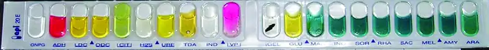
Clinical Focus: Part 2
Many of Hannah’s symptoms are consistent with several different infections, including influenza and pneumonia. However, her sluggish reflexes along with her light sensitivity and stiff neck suggest some possible involvement of the central nervous system, perhaps indicating meningitis. Meningitis is an infection of the cerebrospinal fluid (CSF) around the brain and spinal cord that causes inflammation of the meninges, the protective layers covering the brain. Meningitis can be caused by viruses, bacteria, or fungi. Although all forms of meningitis are serious, bacterial meningitis is particularly serious. Bacterial meningitis may be caused by several different bacteria, but the bacterium Neisseria meningitidis, a gram-negative, bean-shaped diplococcus, is a common cause and leads to death within 1 to 2 days in 5% to 10% of patients.
Given the potential seriousness of Hannah’s conditions, her physician advised her parents to take her to the hospital in the Gambian capital of Banjul and there have her tested and treated for possible meningitis. After a 3-hour drive to the hospital, Hannah was immediately admitted. Physicians took a blood sample and performed a lumbar puncture to test her CSF. They also immediately started her on a course of the antibiotic ceftriaxone, the drug of choice for treatment of meningitis caused by N. meningitidis, without waiting for laboratory test results.
- How might biochemical testing be used to confirm the identity of N. meningitidis?
- Why did Hannah’s doctors decide to administer antibiotics without waiting for the test results?
Jump to the next Clinical Focus box. Go back to the previous Clinical Focus box.
8.5 Catabolism of Lipids and Proteins¶
Learning Objectives
By the end of this section, you will be able to:
- Describe how lipids are catabolized
- Describe how lipid catabolism can be used to identify microbes
- Describe how proteins are catabolized
- Describe how protein catabolism can be used to identify bacteria
Previous sections have discussed the catabolism of glucose, which provides energy to living cells, as well as how polysaccharides like glycogen, starch, and cellulose are degraded to glucose monomers. But microbes consume more than just carbohydrates for food. In fact, the microbial world is known for its ability to degrade a wide range of molecules, both naturally occurring and those made by human processes, for use as carbon sources. In this section, we will see that the pathways for both lipid and protein catabolism connect to those used for carbohydrate catabolism, eventually leading into glycolysis, the transition reaction, and the Krebs cycle pathways. Metabolic pathways should be considered to be porous—that is, substances enter from other pathways, and intermediates leave for other pathways. These pathways are not closed systems. Many of the substrates, intermediates, and products in a particular pathway are reactants in other pathways.
Lipid Catabolism¶
Triglycerides are a form of long-term energy storage in animals. They are made of glycerol and three fatty acids (see Figure 7.12). Phospholipids compose the cell and organelle membranes of all organisms except the archaea. Phospholipid structure is similar to triglycerides except that one of the fatty acids is replaced by a phosphorylated head group (see Figure 7.13). Triglycerides and phospholipids are broken down first by releasing fatty acid chains (and/or the phosphorylated head group, in the case of phospholipids) from the three-carbon glycerol backbone. The reactions breaking down triglycerides are catalyzed by lipases and those involving phospholipids are catalyzed by phospholipases. These enzymes contribute to the virulence of certain microbes, such as the bacterium Staphylococcus aureus and the fungus Cryptococcus neoformans. These microbes use phospholipases to destroy lipids and phospholipids in host cells and then use the catabolic products for energy (see Virulence Factors of Bacterial and Viral Pathogens).
The resulting products of lipid catabolism, glycerol and fatty acids, can be further degraded. Glycerol can be phosphorylated to glycerol-3-phosphate and easily converted to glyceraldehyde 3-phosphate, which continues through glycolysis. The released fatty acids are catabolized in a process called β-oxidation, which sequentially removes two-carbon acetyl groups from the ends of fatty acid chains, reducing NAD+ and FAD to produce NADH and FADH2, respectively, whose electrons can be used to make ATP by oxidative phosphorylation. The acetyl groups produced during β-oxidation are carried by coenzyme A to the Krebs cycle, and their movement through this cycle results in their degradation to CO2, producing ATP by substrate-level phosphorylation and additional NADH and FADH2 molecules (see Appendix C for a detailed illustration of β-oxidation).
Other types of lipids can also be degraded by certain microbes. For example, the ability of certain pathogens, like Mycobacterium tuberculosis, to degrade cholesterol contributes to their virulence. The side chains of cholesterol can be easily removed enzymatically, but degradation of the remaining fused rings is more problematic. The four fused rings are sequentially broken in a multistep process facilitated by specific enzymes, and the resulting products, including pyruvate, can be further catabolized in the Krebs cycle.
Check Your Understanding
- How can lipases and phospholipases contribute to virulence in microbes?
Protein Catabolism¶
Proteins are degraded through the concerted action of a variety of microbial protease enzymes. Extracellular proteases cut proteins internally at specific amino acid sequences, breaking them down into smaller peptides that can then be taken up by cells. Some clinically important pathogens can be identified by their ability to produce a specific type of extracellular protease. For example, the production of the extracellular protease gelatinase by members of the genera Proteus and Serratia can be used to distinguish them from other gram-negative enteric bacteria. Following inoculation and growth of microbes in gelatin broth, degradation of the gelatin protein due to gelatinase production prevents solidification of gelatin when refrigerated. Other pathogens can be distinguished by their ability to degrade casein, the main protein found in milk. When grown on skim milk agar, production of the extracellular protease caseinase causes degradation of casein, which appears as a zone of clearing around the microbial growth. Caseinase production by the opportunist pathogen Pseudomonas aeruginosa can be used to distinguish it from other related gram-negative bacteria.
After extracellular protease degradation and uptake of peptides in the cell, the peptides can then be broken down further into individual amino acids by additional intracellular proteases, and each amino acid can be enzymatically deaminated to remove the amino group. The remaining molecules can then enter the transition reaction or the Krebs cycle.
Check Your Understanding
- How can protein catabolism help identify microbes?
Clinical Focus: Part 3
Because bacterial meningitis progresses so rapidly, Hannah’s doctors had decided to treat her aggressively with antibiotics, based on empirical observation of her symptoms. However, laboratory testing to confirm the cause of Hannah’s meningitis was still important for several reasons. N. meningitidis is an infectious pathogen that can be spread from person to person through close contact; therefore, if tests confirm N. meningitidis as the cause of Hannah’s symptoms, Hannah’s parents and others who came into close contact with her might need to be vaccinated or receive prophylactic antibiotics to lower their risk of contracting the disease. On the other hand, if it turns out that N. meningitidis is not the cause, Hannah’s doctors might need to change her treatment.
The clinical laboratory performed a Gram stain on Hannah’s blood and CSF samples. The Gram stain showed the presence of a bean-shaped gram-negative diplococcus. The technician in the hospital lab cultured Hannah’s blood sample on both blood agar and chocolate agar, and the bacterium that grew on both media formed gray, nonhemolytic colonies. Next, he performed an oxidase test on this bacterium and determined that it was oxidase positive. Last, he examined the repertoire of sugars that the bacterium could use as a carbon source and found that the bacterium was positive for glucose and maltose use but negative for lactose and sucrose use. All of these test results are consistent with characteristics of N. meningitidis.
- What do these test results tell us about the metabolic pathways of N. meningitidis?
- Why do you think that the hospital used these biochemical tests for identification in lieu of molecular analysis by DNA testing?
Jump to the next Clinical Focus box. Go back to the previous Clinical Focus box.
8.6 Photosynthesis¶
Learning Objectives
By the end of this section, you will be able to:
- Describe the function and locations of photosynthetic pigments in eukaryotes and prokaryotes
- Describe the major products of the light-dependent and light-independent reactions
- Describe the reactions that produce glucose in a photosynthetic cell
- Compare and contrast cyclic and noncyclic photophosphorylation
Heterotrophic organisms ranging from E. coli to humans rely on the chemical energy found mainly in carbohydrate molecules. Many of these carbohydrates are produced by photosynthesis, the biochemical process by which phototrophic organisms convert solar energy (sunlight) into chemical energy. Although photosynthesis is most commonly associated with plants, microbial photosynthesis is also a significant supplier of chemical energy, fueling many diverse ecosystems. In this section, we will focus on microbial photosynthesis.
Photosynthesis takes place in two sequential stages: the light-dependent reactions and the light-independent reactions (Figure 8.19). In the light-dependent reactions, energy from sunlight is absorbed by pigment molecules in photosynthetic membranes and converted into stored chemical energy. In the light-independent reactions, the chemical energy produced by the light-dependent reactions is used to drive the assembly of sugar molecules using CO2; however, these reactions are still light dependent because the products of the light-dependent reactions necessary for driving them are short-lived. The light-dependent reactions produce ATP and either NADPH or NADH to temporarily store energy. These energy carriers are used in the light-independent reactions to drive the energetically unfavorable process of “fixing” inorganic CO2 in an organic form, sugar.
![Diagram of photosynthesis showing a chloroplast divided into the light-dependent reactions and CO2 fixation. There is an outer membrane, an inner membrane and a stack of membranes labeled granum (these are photosynthetic membranes). Light strikes the granum and H2A is converted to ½ A. This process produces ATP + NADPH/NADH that is used in the CO2 fixation cycle. This cycle uses CO2 to produce organics. The CO2 cycle also produces ADP + Pi and NADP+ / NAD+ which are then used in the light-dependent reaction.](img/osc-microbio-08-06-lightdepin.webp)
Photosynthetic Structures in Eukaryotes and Prokaryotes¶
In all phototrophic eukaryotes, photosynthesis takes place inside a chloroplast, an organelle that arose in eukaryotes by endosymbiosis of a photosynthetic bacterium (see Unique Characteristics of Eukaryotic Cells). These chloroplasts are enclosed by a double membrane with inner and outer layers. Within the chloroplast is a third membrane that forms stacked, disc-shaped photosynthetic structures called thylakoids (Figure 8.20). A stack of thylakoids is called a granum, and the space surrounding the granum within the chloroplast is called stroma.
Photosynthetic membranes in prokaryotes, by contrast, are not organized into distinct membrane-enclosed organelles; rather, they are infolded regions of the plasma membrane. In cyanobacteria, for example, these infolded regions are also referred to as thylakoids. In either case, embedded within the thylakoid membranes or other photosynthetic bacterial membranes are photosynthetic pigment molecules organized into one or more photosystems, where light energy is actually converted into chemical energy.
Photosynthetic pigments within the photosynthetic membranes are organized into photosystems, each of which is composed of a light-harvesting (antennae) complex and a reaction center. The light-harvesting complex consists of multiple proteins and associated pigments that each may absorb light energy and, thus, become excited. This energy is transferred from one pigment molecule to another until eventually (after about a millionth of a second) it is delivered to the reaction center. Up to this point, only energy—not electrons—has been transferred between molecules. The reaction center contains a pigment molecule that can undergo oxidation upon excitation, actually giving up an electron. It is at this step in photosynthesis that light energy is converted into an excited electron.
Different kinds of light-harvesting pigments absorb unique patterns of wavelengths (colors) of visible light. Pigments reflect or transmit the wavelengths they cannot absorb, making them appear the corresponding color. Examples of photosynthetic pigments (molecules used to absorb solar energy) are bacteriochlorophylls (green, purple, or red), carotenoids (orange, red, or yellow), chlorophylls (green), phycocyanins (blue), and phycoerythrins (red). By having mixtures of pigments, an organism can absorb energy from more wavelengths. Because photosynthetic bacteria commonly grow in competition for sunlight, each type of photosynthetic bacteria is optimized for harvesting the wavelengths of light to which it is commonly exposed, leading to stratification of microbial communities in aquatic and soil ecosystems by light quality and penetration.
Once the light harvesting complex transfers the energy to the reaction center, the reaction center delivers its high-energy electrons, one by one, to an electron carrier in an electron transport system, and electron transfer through the ETS is initiated. The ETS is similar to that used in cellular respiration and is embedded within the photosynthetic membrane. Ultimately, the electron is used to produce NADH or NADPH. The electrochemical gradient that forms across the photosynthetic membrane is used to generate ATP by chemiosmosis through the process of photophosphorylation, another example of oxidative phosphorylation (Figure 8.21).
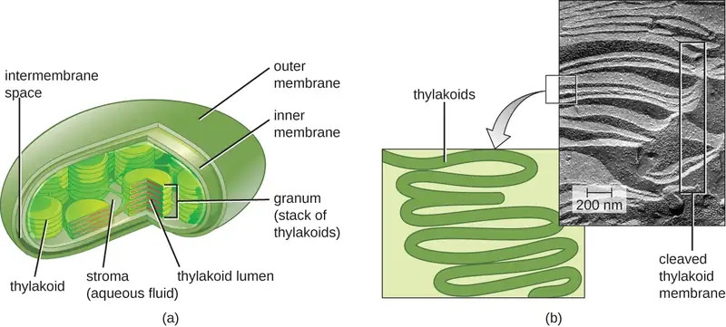
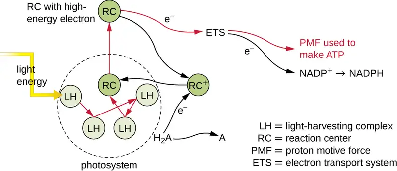
Check Your Understanding
- In a phototrophic eukaryote, where does photosynthesis take place?
Oxygenic and Anoxygenic Photosynthesis¶
For photosynthesis to continue, the electron lost from the reaction center pigment must be replaced. The source of this electron (H2A) differentiates the oxygenic photosynthesis of plants and cyanobacteria from anoxygenic photosynthesis carried out by other types of bacterial phototrophs (Figure 8.22). In oxygenic photosynthesis, H2O is split and supplies the electron to the reaction center. Because oxygen is generated as a byproduct and is released, this type of photosynthesis is referred to as oxygenic photosynthesis. However, when other reduced compounds serve as the electron donor, oxygen is not generated; these types of photosynthesis are called anoxygenic photosynthesis. Hydrogen sulfide (H2S) or thiosulfate \((\text{S}_{2}\text{O}_{3}^{\text{2−}})\) can serve as the electron donor, generating elemental sulfur and sulfate \((\text{SO}_{4}^{\text{2−}})\) ions, respectively, as a result.
After several scientists hypothesized that two light reactions, rather than one, were required to split water and capture energy, Joan Mary Anderson undertook a series of experiments to prove the existence of two types of photosystems: photosystem I (PSI) and photosystem II (PSII) (Figure 8.23). Working with colleague Keith Boardman, Anderson chemically fragmented active chloroplasts, then used a centrifuge to separate the components. She was able to demonstrate that different portions of the chloroplasts produced different products, thereby showing that there were two parts to the photosystems. This work also laid the foundation to understanding how the structures within the chloroplasts related to the different systems. Cyanobacteria and plant chloroplasts have both photosystems, whereas anoxygenic photosynthetic bacteria use only one of the photosystems. Both photosystems are excited by light energy simultaneously. If the cell requires both ATP and NADPH for biosynthesis, then it will carry out noncyclic photophosphorylation. Upon passing of the PSII reaction center electron to the ETS that connects PSII and PSI, the lost electron from the PSII reaction center is replaced by the splitting of water. The excited PSI reaction center electron is used to reduce NADP+ to NADPH and is replaced by the electron exiting the ETS. The flow of electrons in this way is called the Z-scheme.
If a cell’s need for ATP is significantly greater than its need for NADPH, it may bypass the production of reducing power through cyclic photophosphorylation. Only PSI is used during cyclic photophosphorylation; the high-energy electron of the PSI reaction center is passed to an ETS carrier and then ultimately returns to the oxidized PSI reaction center pigment, thereby reducing it.
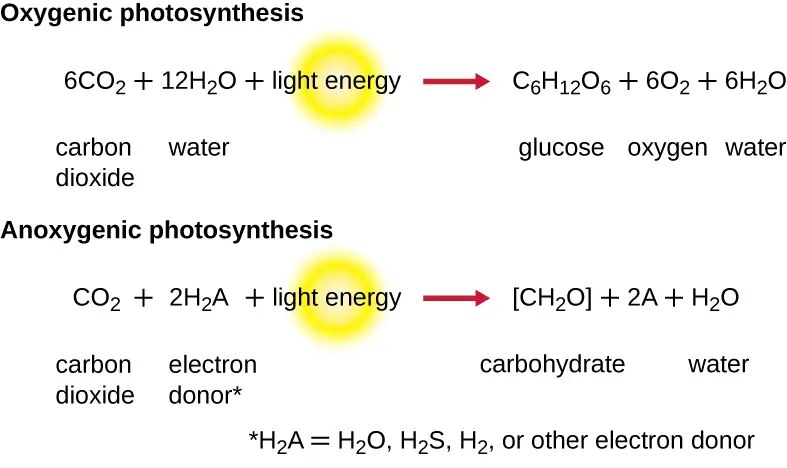
![a) Drawing of a thylakoid membrane with proteins. Light strikes PS II which breaks water into ½ O2, 2 H+ and an electron. The electron moves to PO, PQH2, cytochrome, PO, and then to PSI. This is an electron transport chain and as the electron moves, H+ is pumped from the stroma to the thylakoid space. Light Strikes PSI and the electron is excited again; it is then moved to FD and then NADP+ reductase. This produces NADPH from NADP+ and H+. Protons from the inner thylakoid space move out to the stroma through ATP synthase which produces ATP. B) the same diagram but in a graphical format with amount of energy on the Y axis. PSII has an antenna pigment and P680 which absorbs light at 680 nm. This excites the electron (moves it up in the graph). The electron then decreases in energy as it moves from PO to OQHS, to cytochrome, to PO and then to PS I. Light at 700 nm strikes P700 and the electron is excited again. The electron then decreases in energy as it moves from FD to NADP+ reductase to NADPH. Moving from PSII to NADPH is non-cyclic photosynthesis. Cyclic photosynthesis is when the electron moves from PSI back to PS II.](img/osc-microbio-08-06-psi-psii.webp)
Check Your Understanding
- Why would a photosynthetic bacterium have different pigments?
Light-Independent Reactions¶
After the energy from the sun is converted into chemical energy and temporarily stored in ATP and NADPH molecules (having lifespans of millionths of a second), photoautotrophs have the fuel needed to build multicarbon carbohydrate molecules, which can survive for hundreds of millions of years, for long-term energy storage. The carbon comes from CO2, the gas that is a waste product of cellular respiration.
The Calvin-Benson cycle (named for Melvin Calvin [1911–1997] and Andrew Benson [1917–2015]), the biochemical pathway used for fixation of CO2, is located within the cytoplasm of photosynthetic bacteria and in the stroma of eukaryotic chloroplasts. The light-independent reactions of the Calvin cycle can be organized into three basic stages: fixation, reduction, and regeneration (see Appendix C for a detailed illustration of the Calvin cycle).
- Fixation: The enzyme ribulose bisphosphate carboxylase (RuBisCO) catalyzes the addition of a CO2 to ribulose bisphosphate (RuBP). This results in the production of 3-phosphoglycerate (3-PGA).
- Reduction: Six molecules of both ATP and NADPH (from the light-dependent reactions) are used to convert 3-PGA into glyceraldehyde 3-phosphate (G3P). Some G3P is then used to build glucose.
- Regeneration: The remaining G3P not used to synthesize glucose is used to regenerate RuBP, enabling the system to continue CO2 fixation. Three more molecules of ATP are used in these regeneration reactions.
The Calvin cycle is used extensively by plants and photoautotrophic bacteria, and the enzyme RuBisCO is said to be the most plentiful enzyme on earth, composing 30%–50% of the total soluble protein in plant chloroplasts.1 However, besides its prevalent use in photoautotrophs, the Calvin cycle is also used by many nonphotosynthetic chemoautotrophs to fix CO2. Additionally, other bacteria and archaea use alternative systems for CO2 fixation. Although most bacteria using Calvin cycle alternatives are chemoautotrophic, certain green sulfur photoautotrophic bacteria have been also shown to use an alternative CO2 fixation pathway.
Check Your Understanding
- Describe the three stages of the Calvin cycle.
8.7 Biogeochemical Cycles¶
Learning Objectives
By the end of this section, you will be able to:
- Define and describe the importance of microorganisms in the biogeochemical cycles of carbon, nitrogen, and sulfur
- Define and give an example of bioremediation
Energy flows directionally through ecosystems, entering as sunlight for phototrophs or as inorganic molecules for chemoautotrophs. The six most common elements associated with organic molecules—carbon, hydrogen, nitrogen, oxygen, phosphorus, and sulfur—take a variety of chemical forms and may exist for long periods in the atmosphere, on land, in water, or beneath earth’s surface. Geologic processes, such as erosion, water drainage, the movement of the continental plates, and weathering, all are involved in the cycling of elements on earth. Because geology and chemistry have major roles in the study of this process, the recycling of inorganic matter between living organisms and their nonliving environment is called a biogeochemical cycle. Here, we will focus on the function of microorganisms in these cycles, which play roles at each step, most frequently interconverting oxidized versions of molecules with reduced ones.
Carbon Cycle¶
Carbon is one of the most important elements to living organisms, as shown by its abundance and presence in all organic molecules. The carbon cycle exemplifies the connection between organisms in various ecosystems. Carbon is exchanged between heterotrophs and autotrophs within and between ecosystems primarily by way of atmospheric CO2, a fully oxidized version of carbon that serves as the basic building block that autotrophs use to build multicarbon, high-energy organic molecules such as glucose. Photoautotrophs and chemoautotrophs harness energy from the sun and from inorganic chemical compounds, respectively, to covalently bond carbon atoms together into reduced organic compounds whose energy can be later accessed through the processes of respiration and fermentation (Figure 8.24).
Overall, there is a constant exchange of CO2 between the heterotrophs (which produce CO2 as a result of respiration or fermentation) and the autotrophs (which use the CO2 for fixation). Autotrophs also respire or ferment, consuming the organic molecules they form; they do not fix carbon for heterotrophs, but rather use it for their own metabolic needs.
Bacteria and archaea that use methane as their carbon source are called methanotrophs. Reduced one-carbon compounds like methane accumulate in certain anaerobic environments when CO2 is used as a terminal electron acceptor in anaerobic respiration by archaea called methanogens. Some methanogens also ferment acetate (two carbons) to produce methane and CO2. Methane accumulation due to methanogenesis occurs in both natural anaerobic soil and aquatic environments; methane accumulation also occurs as a result of animal husbandry because methanogens are members of the normal microbiota of ruminants. Environmental methane accumulation due to methanogenesis is of consequence because it is a strong greenhouse gas, and methanotrophs help to reduce atmospheric methane levels.
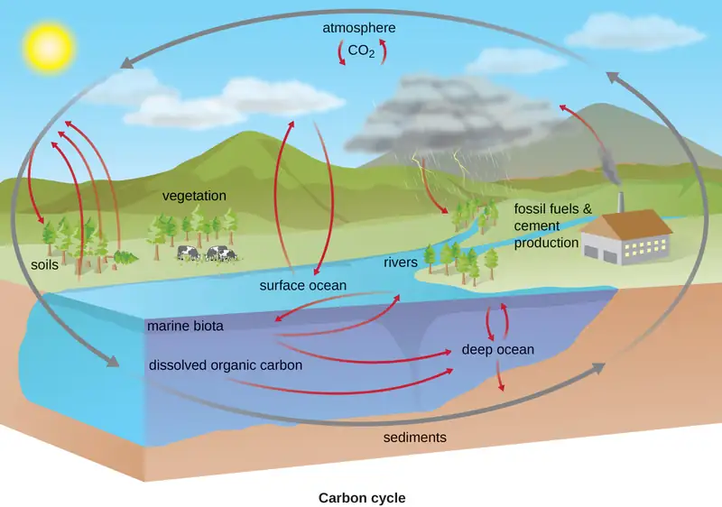
Check Your Understanding
- Describe the interaction between heterotrophs and autotrophs in the carbon cycle.
Nitrogen Cycle¶
Many biological macromolecules, including proteins and nucleic acids, contain nitrogen; however, getting nitrogen into living organisms is difficult. Prokaryotes play essential roles in the nitrogen cycle (Figure 8.25), transforming nitrogen between various forms for their own needs, benefiting other organisms indirectly. Plants and phytoplankton cannot incorporate nitrogen from the atmosphere (where it exists as tightly bonded, triple covalent N2), even though this molecule composes approximately 78% of the atmosphere. Nitrogen enters the living world through free-living and symbiotic bacteria, which incorporate nitrogen into their macromolecules through specialized biochemical pathways called nitrogen fixation. Cyanobacteria in aquatic ecosystems fix inorganic nitrogen (from nitrogen gas) into ammonia (NH3) that can be easily incorporated into biological macromolecules. Rhizobium bacteria (Figure 8.1) also fix nitrogen and live symbiotically in the root nodules of legumes (such as beans, peanuts, and peas), providing them with needed organic nitrogen while receiving fixed carbon as sugar in exchange. Free-living bacteria, such as members of the genus Azotobacter, are also able to fix nitrogen.
The nitrogen that enters living systems by nitrogen fixation is eventually converted from organic nitrogen back into nitrogen gas by microbes through three steps: ammonification, nitrification, and denitrification. In terrestrial systems, the first step is the ammonification process, in which certain bacteria and fungi convert nitrogenous waste from living animals or from the remains of dead organisms into ammonia (NH3). This ammonia is then oxidized to nitrite \((\text{NO}_{2}^{-}),\) then to nitrate \((\text{NO}_{3}^{-}),\) by nitrifying soil bacteria such as members of the genus Nitrosomonas, through the process of nitrification. Last, the process of denitrification occurs, whereby soil bacteria, such as members of the genera Pseudomonas and Clostridium, use nitrate as a terminal electron acceptor in anaerobic respiration, converting it into nitrogen gas that reenters the atmosphere. A similar process occurs in the marine nitrogen cycle, where these three processes are performed by marine bacteria and archaea.
Human activity releases nitrogen into the environment by the use of artificial fertilizers that contain nitrogen and phosphorus compounds, which are then washed into lakes, rivers, and streams by surface runoff. A major effect from fertilizer runoff is saltwater and freshwater eutrophication, in which nutrient runoff causes the overgrowth and subsequent death of aquatic algae, making water sources anaerobic and inhospitable for the survival of aquatic organisms.
![The nitrogen cycle. Gaseous atmospheric nitrogen shore; this moves into organic matter (R-NH2) through bacterial and lightning fixation. Fertilizers and mineralization produce ammonium (NH4+). This can enter waterways via run off and leaching. Ammonium is converted to nitrates (NO2-) via nitrification. These are then converted to nitrates (NO3-) via nitrification. Both of these can end up in waterways causing eutrophication. Nitrates can be taken in by plants or converted to gaseous nitrate (N2) by denitrification.](img/osc-microbio-08-07-ncycle.webp)
Check Your Understanding
- What are the four steps of the nitrogen cycle?
Link to Learning
To learn more about the nitrogen cycle, visit the PBS website.
Sulfur Cycle¶
Sulfur is an essential element for the macromolecules of living organisms. As part of the amino acids cysteine and methionine, it is involved in the formation of proteins. It is also found in several vitamins necessary for the synthesis of important biological molecules like coenzyme A. Several groups of microbes are responsible for carrying out processes involved in the sulfur cycle (Figure 8.26). Anoxygenic photosynthetic bacteria as well as chemoautotrophic archaea and bacteria use hydrogen sulfide as an electron donor, oxidizing it first to elemental sulfur (S0), then to sulfate \(({\text{SO}_{4}}^{2-}).\) This leads to stratification of hydrogen sulfide in soil, with levels increasing at deeper, more anaerobic depths.
Many bacteria and plants can use sulfate as a sulfur source. Decomposition dead organisms by fungi and bacteria remove sulfur groups from amino acids, producing hydrogen sulfide, returning inorganic sulfur to the environment.
![Sulfur cycle. Atmospheric sulfur (SO2 gas) is taken in by plants. Plant residues and animal manures and biosolids produce organic sulfur. Mineralization produces sulfate (SO42-). Immobilization reverts sulfate back to organic sulfur. Sulfate is converted to H2S via anaerobic respiration. Decomposition also produces H2S. Sulfate can be absorbed or converted to mineral sulfur. Bacterial reduction converts sulfate to reduced sulfur (H2S, HS). Oxidation converts reduced sulfur and elemental sulfur (SO0) to sulfate.](img/osc-microbio-08-07-scycle.webp)
Check Your Understanding
- Which groups of microbes carry out the sulfur cycle?
Other Biogeochemical Cycles¶
Beyond their involvement in the carbon, nitrogen, and sulfur cycles, prokaryotes are involved in other biogeochemical cycles as well. Like the carbon, nitrogen, and sulfur cycles, several of these additional biogeochemical cycles, such as the iron (Fe), manganese (Mn), and chromium (Cr) cycles, also involve redox chemistry, with prokaryotes playing roles in both oxidation and reduction. Several other elements undergo chemical cycles that do not involve redox chemistry. Examples of these are phosphorus (P), calcium (Ca), and silica (Si) cycles. The cycling of these elements is particularly important in oceans because large quantities of these elements are incorporated into the exoskeletons of marine organisms. These biogeochemical cycles do not involve redox chemistry but instead involve fluctuations in the solubility of compounds containing calcium, phosphorous, and silica. The overgrowth of naturally occurring microbial communities is typically limited by the availability of nitrogen (as previously mentioned), phosphorus, and iron. Human activities introducing excessive amounts of iron, nitrogen, or phosphorus (typically from detergents) may lead to eutrophication.
Bioremediation¶
Microbial bioremediation leverages microbial metabolism to remove xenobiotics or other pollutants. Xenobiotics are compounds synthesized by humans and introduced into the environment in much higher concentrations than would naturally occur. Such environmental contamination may involve adhesives, dyes, flame retardants, lubricants, oil and petroleum products, organic solvents, pesticides, and products of the combustion of gasoline and oil. Many xenobiotics resist breakdown, and some accumulate in the food chain after being consumed or absorbed by fish and wildlife, which, in turn, may be eaten by humans. Of particular concern are contaminants like polycyclic aromatic hydrocarbon (PAH), a carcinogenic xenobiotic found in crude oil, and trichloroethylene (TCE), a common groundwater contaminant.
Bioremediation processes can be categorized as in situ or ex situ. Bioremediation conducted at the site of contamination is called in situ bioremediation and does not involve movement of contaminated material. In contrast, ex situ bioremediation involves the removal of contaminated material from the original site so that it can be treated elsewhere, typically in a large, lined pit where conditions are optimized for degradation of the contaminant.
Some bioremediation processes rely on microorganisms that are indigenous to the contaminated site or material. Enhanced bioremediation techniques, which may be applied to either in situ or ex situ processing, involve the addition of nutrients and/or air to encourage the growth of pollution-degrading microbes; they may also involve the addition of non-native microbes known for their ability to degrade contaminants. For example, certain bacteria of the genera Rhodococcus and Pseudomonas are known for their ability to degrade many environmental contaminants, including aromatic compounds like those found in oil, down to CO2. The genes encoding their degradatory enzymes are commonly found on plasmids. Others, like Alcanivorax borkumensis, produce surfactants that are useful in the solubilization of the hydrophobic molecules found in oil, making them more accessible to other microbes for degradation.
Check Your Understanding
- Compare and contrast the benefits of in situ and ex situ bioremediation.
Clinical Focus: Resolution
Although there is a DNA test specific for Neisseria meningitidis, it is not practical for use in some developing countries because it requires expensive equipment and a high level of expertise to perform. The hospital in Banjul was not equipped to perform DNA testing. Biochemical testing, however, is much less expensive and is still effective for microbial identification.
Fortunately for Hannah, her symptoms began to resolve with antibiotic therapy. Patients who survive bacterial meningitis often suffer from long-term complications such as brain damage, hearing loss, and seizures, but after several weeks of recovery, Hannah did not seem to be exhibiting any long-term effects and her behavior returned to normal. Because of her age, her parents were advised to monitor her closely for any signs of developmental issues and have her regularly evaluated by her pediatrician.
N. meningitidis is found in the normal respiratory microbiota in 10%–20% of the human population.2 In most cases, it does not cause disease, but for reasons not fully understood, the bacterium can sometimes invade the bloodstream and cause infections in other areas of the body, including the brain. The disease is more common in infants and children, like Hannah.
The prevalence of meningitis caused by N. meningitidis is particularly high in the so-called meningitis belt, a region of sub-Saharan African that includes 26 countries stretching from Senegal to Ethiopia (Figure 8.27). The reasons for this high prevalence are not clear, but several factors may contribute to higher rates of transmission, such as the dry, dusty climate; overcrowding and low standards of living; and the relatively low immunocompetence and nutritional status of the population.3 A vaccine against four bacterial strains of N. meningitidis is available. Vaccination is recommended for 11- and 12-year-old children, with a booster at age 16 years. Vaccination is also recommended for young people who live in close quarters with others (e.g., college dormitories, military barracks), where the disease is more easily transmitted. Travelers visiting the “meningitis belt” should also be vaccinated, especially during the dry season (December through June) when the prevalence is highest.45
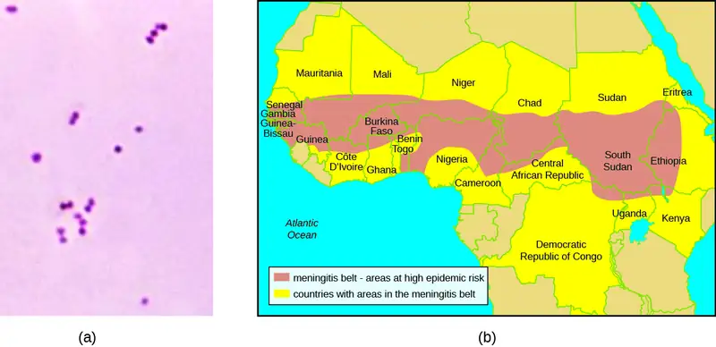
Go back to the previous Clinical Focus box.
Chapter Review¶
Key Concepts and Summary¶
8.1 Energy, Matter, and Enzymes¶
- Metabolism includes chemical reactions that break down complex molecules (catabolism) and those that build complex molecules (anabolism).
- Organisms may be classified according to their source of carbon. Autotrophs convert inorganic carbon dioxide into organic carbon; heterotrophs use fixed organic carbon compounds.
- Organisms may also be classified according to their energy source. Phototrophs obtain their energy from light. Chemotrophs get their energy from chemical compounds. Organotrophs use organic molecules, and lithotrophs use inorganic chemicals.
- Cellular electron carriers accept high-energy electrons from foods and later serve as electron donors in subsequent redox reactions. FAD/FADH2, NAD+/NADH, and NADP+/NADPH are important electron carriers.
- Adenosine triphosphate (ATP) serves as the energy currency of the cell, safely storing chemical energy in its two high-energy phosphate bonds for later use to drive processes requiring energy.
- Enzymes are biological catalysts that increase the rate of chemical reactions inside cells by lowering the activation energy required for the reaction to proceed.
- In nature, exergonic reactions do not require energy beyond activation energy to proceed, and they release energy. They may proceed without enzymes, but at a slow rate. Conversely, endergonic reactions require energy beyond activation energy to occur. In cells, endergonic reactions are coupled to exergonic reactions, making the combination energetically favorable.
- Substrates bind to the enzyme’s active site. This process typically alters the structures of both the active site and the substrate, favoring transition-state formation; this is known as induced fit.
- Cofactors are inorganic ions that stabilize enzyme conformation and function. Coenzymes are organic molecules required for proper enzyme function and are often derived from vitamins. An enzyme lacking a cofactor or coenzyme is an apoenzyme; an enzyme with a bound cofactor or coenzyme is a holoenzyme.
- Competitive inhibitors regulate enzymes by binding to an enzyme’s active site, preventing substrate binding. Noncompetitive (allosteric) inhibitors bind to allosteric sites, inducing a conformational change in the enzyme that prevents it from functioning. Feedback inhibition occurs when the product of a metabolic pathway noncompetitively binds to an enzyme early on in the pathway, ultimately preventing the synthesis of the product.
8.2 Catabolism of Carbohydrates¶
- Glycolysis is the first step in the breakdown of glucose, resulting in the formation of ATP, which is produced by substrate-level phosphorylation; NADH; and two pyruvate molecules. Glycolysis does not use oxygen and is not oxygen dependent.
- After glycolysis, a three-carbon pyruvate is decarboxylated to form a two-carbon acetyl group, coupled with the formation of NADH. The acetyl group is attached to a large carrier compound called coenzyme A.
- After the transition step, coenzyme A transports the two-carbon acetyl to the Krebs cycle, where the two carbons enter the cycle. Per turn of the cycle, one acetyl group derived from glycolysis is further oxidized, producing three NADH molecules, one FADH2, and one ATP by substrate-level phosphorylation, and releasing two CO2 molecules.
- The Krebs cycle may be used for other purposes. Many of the intermediates are used to synthesize important cellular molecules, including amino acids, chlorophylls, fatty acids, and nucleotides.
8.3 Cellular Respiration¶
- Most ATP generated during the cellular respiration of glucose is made by oxidative phosphorylation.
- An electron transport system (ETS) is composed of a series of membrane-associated protein complexes and associated mobile accessory electron carriers. The ETS is embedded in the cytoplasmic membrane of prokaryotes and the inner mitochondrial membrane of eukaryotes.
- Each ETS complex has a different redox potential, and electrons move from electron carriers with more negative redox potential to those with more positive redox potential.
- To carry out aerobic respiration, a cell requires oxygen as the final electron acceptor. A cell also needs a complete Krebs cycle, an appropriate cytochrome oxidase, and oxygen detoxification enzymes to prevent the harmful effects of oxygen radicals produced during aerobic respiration.
- Organisms performing anaerobic respiration use alternative electron transport system carriers for the ultimate transfer of electrons to the final non-oxygen electron acceptors.
- Microbes show great variation in the composition of their electron transport systems, which can be used for diagnostic purposes to help identify certain pathogens.
- As electrons are passed from NADH and FADH2 through an ETS, the electron loses energy. This energy is stored through the pumping of H+ across the membrane, generating a proton motive force.
- The energy of this proton motive force can be harnessed by allowing hydrogen ions to diffuse back through the membrane by chemiosmosis using ATP synthase. As hydrogen ions diffuse through down their electrochemical gradient, components of ATP synthase spin, making ATP from ADP and Pi by oxidative phosphorylation.
- Aerobic respiration forms more ATP (a maximum of 34 ATP molecules) during oxidative phosphorylation than does anaerobic respiration (between one and 32 ATP molecules).
8.4 Fermentation¶
- Fermentation uses an organic molecule as a final electron acceptor to regenerate NAD+ from NADH so that glycolysis can continue.
- Fermentation does not involve an electron transport system, and no ATP is made by the fermentation process directly. Fermenters make very little ATP—only two ATP molecules per glucose molecule during glycolysis.
- Microbial fermentation processes have been used for the production of foods and pharmaceuticals, and for the identification of microbes.
- During lactic acid fermentation, pyruvate accepts electrons from NADH and is reduced to lactic acid. Microbes performing homolactic fermentation produce only lactic acid as the fermentation product; microbes performing heterolactic fermentation produce a mixture of lactic acid, ethanol and/or acetic acid, and CO2.
- Lactic acid production by the normal microbiota prevents growth of pathogens in certain body regions and is important for the health of the gastrointestinal tract.
- During ethanol fermentation, pyruvate is first decarboxylated (releasing CO2) to acetaldehyde, which then accepts electrons from NADH, reducing acetaldehyde to ethanol. Ethanol fermentation is used for the production of alcoholic beverages, for making bread products rise, and for biofuel production.
- Fermentation products of pathways (e.g., propionic acid fermentation) provide distinctive flavors to food products. Fermentation is used to produce chemical solvents (acetone-butanol-ethanol fermentation) and pharmaceuticals (mixed acid fermentation).
- Specific types of microbes may be distinguished by their fermentation pathways and products. Microbes may also be differentiated according to the substrates they are able to ferment.
8.5 Catabolism of Lipids and Proteins¶
- Collectively, microbes have the ability to degrade a wide variety of carbon sources besides carbohydrates, including lipids and proteins. The catabolic pathways for all of these molecules eventually connect into glycolysis and the Krebs cycle.
- Several types of lipids can be microbially degraded. Triglycerides are degraded by extracellular lipases, releasing fatty acids from the glycerol backbone. Phospholipids are degraded by phospholipases, releasing fatty acids and the phosphorylated head group from the glycerol backbone. Lipases and phospholipases act as virulence factors for certain pathogenic microbes.
- Fatty acids can be further degraded inside the cell through β-oxidation, which sequentially removes two-carbon acetyl groups from the ends of fatty acid chains.
- Protein degradation involves extracellular proteases that degrade large proteins into smaller peptides. Detection of the extracellular proteases gelatinase and caseinase can be used to differentiate clinically relevant bacteria.
8.6 Photosynthesis¶
- Heterotrophs depend on the carbohydrates produced by autotrophs, many of which are photosynthetic, converting solar energy into chemical energy.
- Different photosynthetic organisms use different mixtures of photosynthetic pigments, which increase the range of the wavelengths of light an organism can absorb.
- Photosystems (PSI and PSII) each contain a light-harvesting complex, composed of multiple proteins and associated pigments that absorb light energy. The light-dependent reactions of photosynthesis convert solar energy into chemical energy, producing ATP and NADPH or NADH to temporarily store this energy.
- In oxygenic photosynthesis, H2O serves as the electron donor to replace the reaction center electron, and oxygen is formed as a byproduct. In anoxygenic photosynthesis, other reduced molecules like H2S or thiosulfate may be used as the electron donor; as such, oxygen is not formed as a byproduct.
- Noncyclic photophosphorylation is used in oxygenic photosynthesis when there is a need for both ATP and NADPH production. If a cell’s needs for ATP outweigh its needs for NADPH, then it may carry out cyclic photophosphorylation instead, producing only ATP.
- The light-independent reactions of photosynthesis use the ATP and NADPH from the light-dependent reactions to fix CO2 into organic sugar molecules.
8.7 Biogeochemical Cycles¶
- The recycling of inorganic matter between living organisms and their nonliving environment is called a biogeochemical cycle. Microbes play significant roles in these cycles.
- In the carbon cycle, heterotrophs degrade reduced organic molecule to produce carbon dioxide, whereas autotrophs fix carbon dioxide to produce organics. Methanogens typically form methane by using CO2 as a final electron acceptor during anaerobic respiration; methanotrophs oxidize the methane, using it as their carbon source.
- In the nitrogen cycle, nitrogen-fixing bacteria convert atmospheric nitrogen into ammonia (ammonification). The ammonia can then be oxidized to nitrite and nitrate (nitrification). Nitrates can then be assimilated by plants. Soil bacteria convert nitrate back to nitrogen gas (denitrification).
- In sulfur cycling, many anoxygenic photosynthesizers and chemoautotrophs use hydrogen sulfide as an electron donor, producing elemental sulfur and then sulfate; sulfate-reducing bacteria and archaea then use sulfate as a final electron acceptor in anaerobic respiration, converting it back to hydrogen sulfide.
- Human activities that introduce excessive amounts of naturally limited nutrients (like iron, nitrogen, or phosphorus) to aquatic systems may lead to eutrophication.
- Microbial bioremediation is the use of microbial metabolism to remove or degrade xenobiotics and other environmental contaminants and pollutants. Enhanced bioremediation techniques may involve the introduction of non-native microbes specifically chosen or engineered for their ability to degrade contaminants.
Multiple Choice¶
8.1 Energy, Matter, and Enzymes¶
1. Which of the following is an organism that obtains its energy from the transfer of electrons originating from chemical compounds and its carbon from an inorganic source?
- chemoautotroph
- chemoheterotroph
- photoheterotroph
- photoautotroph
Answer
A
2. Which of the following molecules is reduced?
- NAD+
- FAD
- O2
- NADPH
Answer
D
3. Enzymes work by which of the following?
- increasing the activation energy
- reducing the activation energy
- making exergonic reactions endergonic
- making endergonic reactions exergonic
Answer
B
4. To which of the following does a competitive inhibitor most structurally resemble?
- the active site
- the allosteric site
- the substrate
- a coenzyme
Answer
C
5. Which of the following are organic molecules that help enzymes work correctly?
- cofactors
- coenzymes
- holoenzymes
- apoenzymes
Answer
B
8.2 Catabolism of Carbohydrates¶
6. During which of the following is ATP not made by substrate-level phosphorylation?
- Embden-Meyerhof pathway
- Transition reaction
- Krebs cycle
- Entner-Doudoroff pathway
Answer
B
7. Which of the following products is made during Embden-Meyerhof glycolysis?
- NAD+
- pyruvate
- CO2
- two-carbon acetyl
Answer
B
8. During the catabolism of glucose, which of the following is produced only in the Krebs cycle?
- ATP
- NADH
- NADPH
- FADH2
Answer
D
9. Which of the following is not a name for the cycle resulting in the conversion of a two-carbon acetyl to one ATP, two CO2, one FADH2, and three NADH molecules?
- Krebs cycle
- tricarboxylic acid cycle
- Calvin cycle
- citric acid cycle
Answer
C
8.3 Cellular Respiration¶
10. Which is the location of electron transports systems in prokaryotes?
- the outer mitochondrial membrane
- the cytoplasm
- the inner mitochondrial membrane
- the cytoplasmic membrane
Answer
D
11. Which is the source of the energy used to make ATP by oxidative phosphorylation?
- oxygen
- high-energy phosphate bonds
- the proton motive force
- Pi
Answer
C
12. A cell might perform anaerobic respiration for which of the following reasons?
- It lacks glucose for degradation.
- It lacks the transition reaction to convert pyruvate to acetyl-CoA.
- It lacks Krebs cycle enzymes for processing acetyl-CoA to CO2.
- It lacks a cytochrome oxidase for passing electrons to oxygen.
Answer
D
13. In prokaryotes, which of the following is true?
- As electrons are transferred through an ETS, H+ is pumped out of the cell.
- As electrons are transferred through an ETS, H+ is pumped into the cell.
- As protons are transferred through an ETS, electrons are pumped out of the cell.
- As protons are transferred through an ETS, electrons are pumped into the cell.
Answer
A
14. Which of the following is not an electron carrier within an electron transport system?
- flavoprotein
- ATP synthase
- ubiquinone
- cytochrome oxidase
Answer
B
8.4 Fermentation¶
15. Which of the following is the purpose of fermentation?
- to make ATP
- to make carbon molecule intermediates for anabolism
- to make NADH
- to make NAD+
Answer
D
16. Which molecule typically serves as the final electron acceptor during fermentation?
- oxygen
- NAD+
- pyruvate
- CO2
Answer
C
17. Which fermentation product is important for making bread rise?
- ethanol
- CO2
- lactic acid
- hydrogen gas
Answer
B
18. Which of the following is not a commercially important fermentation product?
- ethanol
- pyruvate
- butanol
- penicillin
Answer
B
8.5 Catabolism of Lipids and Proteins¶
19. Which of the following molecules is not produced during the breakdown of phospholipids?
- glucose
- glycerol
- acetyl groups
- fatty acids
Answer
A
20. Caseinase is which type of enzyme?
- phospholipase
- lipase
- extracellular protease
- intracellular protease
Answer
C
21. Which of the following is the first step in triglyceride degradation?
- removal of fatty acids
- β-oxidation
- breakage of fused rings
- formation of smaller peptides
Answer
A
8.6 Photosynthesis¶
22. During the light-dependent reactions, which molecule loses an electron?
- a light-harvesting pigment molecule
- a reaction center pigment molecule
- NADPH
- 3-phosphoglycerate
Answer
B
23. In prokaryotes, in which direction are hydrogen ions pumped by the electron transport system of photosynthetic membranes?
- to the outside of the plasma membrane
- to the inside (cytoplasm) of the cell
- to the stroma
- to the intermembrane space of the chloroplast
Answer
A
24. Which of the following does not occur during cyclic photophosphorylation in cyanobacteria?
- electron transport through an ETS
- photosystem I use
- ATP synthesis
- NADPH formation
Answer
D
25. Which of the following are two products of the light-dependent reactions?
- glucose and NADPH
- NADPH and ATP
- glyceraldehyde 3-phosphate and CO2
- glucose and oxygen
Answer
B
8.7 Biogeochemical Cycles¶
26. Which of the following is the group of archaea that can use CO2 as their final electron acceptor during anaerobic respiration, producing CH4?
- methylotrophs
- methanotrophs
- methanogens
- anoxygenic photosynthesizers
Answer
C
27. Which of the following processes is not involved in the conversion of organic nitrogen to nitrogen gas?
- nitrogen fixation
- ammonification
- nitrification
- denitrification
Answer
A
28. Which of the following processes produces hydrogen sulfide?
- anoxygenic photosynthesis
- oxygenic photosynthesis
- anaerobic respiration
- chemoautrophy
Answer
C
29. The biogeochemical cycle of which of the following elements is based on changes in solubility rather than redox chemistry?
- carbon
- sulfur
- nitrogen
- phosphorus
Answer
D
Fill in the Blank¶
8.1 Energy, Matter, and Enzymes¶
30. Processes in which cellular energy is used to make complex molecules from simpler ones are described as ________.
Answer
anabolic
31. The loss of an electron from a molecule is called ________.
Answer
oxidation
32. The part of an enzyme to which a substrate binds is called the ________.
Answer
active site
8.2 Catabolism of Carbohydrates¶
33. Per turn of the Krebs cycle, one acetyl is oxidized, forming ____ CO2, ____ ATP, ____ NADH, and ____ FADH2 molecules.
Answer
2; 1; 3; 1
34. Most commonly, glycolysis occurs by the ________ pathway.
Answer
Embden-Meyerhof
8.3 Cellular Respiration¶
35. The final ETS complex used in aerobic respiration that transfers energy-depleted electrons to oxygen to form H2O is called ________.
Answer
cytochrome oxidase
36. The passage of hydrogen ions through ________ down their electrochemical gradient harnesses the energy needed for ATP synthesis by oxidative phosphorylation.
Answer
ATP synthase
8.4 Fermentation¶
37. The microbe responsible for ethanol fermentation for the purpose of producing alcoholic beverages is ________.
Answer
yeast (Saccharomyces cerevisiae)
38. ________ results in the production of a mixture of fermentation products, including lactic acid, ethanol and/or acetic acid, and CO2.
Answer
Heterolactic fermentation
39. Fermenting organisms make ATP through the process of ________.
Answer
glycolysis
8.5 Catabolism of Lipids and Proteins¶
40. The process by which two-carbon units are sequentially removed from fatty acids, producing acetyl-CoA, FADH2, and NADH is called ________.
Answer
β-oxidation
41. The NADH and FADH2 produced during β-oxidation are used to make ________.
Answer
ATP by oxidative phosphorylation
42. ________ is a type of medium used to detect the production of an extracellular protease called caseinase.
Answer
Skim milk agar
8.6 Photosynthesis¶
43. The enzyme responsible for CO2 fixation during the Calvin cycle is called ________.
Answer
ribulose bisphosphate carboxylase (RuBisCO)
44. The types of pigment molecules found in plants, algae, and cyanobacteria are ________ and ________.
Answer
chlorophylls and carotenoids
8.7 Biogeochemical Cycles¶
45. The molecule central to the carbon cycle that is exchanged within and between ecosystems, being produced by heterotrophs and used by autotrophs, is ________.
Answer
carbon dioxide
46. The use of microbes to remove pollutants from a contaminated system is called ________.
Answer
bioremediation
True/False¶
8.1 Energy, Matter, and Enzymes¶
47. Competitive inhibitors bind to allosteric sites.
Answer
False
8.2 Catabolism of Carbohydrates¶
48. Glycolysis requires oxygen or another inorganic final electron acceptor to proceed.
Answer
False
8.3 Cellular Respiration¶
49. All organisms that use aerobic cellular respiration have cytochrome oxidase.
Answer
True
8.6 Photosynthesis¶
50. Photosynthesis always results in the formation of oxygen.
Answer
False
8.7 Biogeochemical Cycles¶
51. There are many naturally occurring microbes that have the ability to degrade several of the compounds found in oil.
Answer
True
Short Answer¶
8.1 Energy, Matter, and Enzymes¶
52. In cells, can an oxidation reaction happen in the absence of a reduction reaction? Explain.
53. What is the function of molecules like NAD+/NADH and FAD/FADH2 in cells?
8.2 Catabolism of Carbohydrates¶
54. What is substrate-level phosphorylation? When does it occur during the breakdown of glucose to CO2?
55. Why is the Krebs cycle important in both catabolism and anabolism?
8.3 Cellular Respiration¶
56. What is the relationship between chemiosmosis and the proton motive force?
57. How does oxidative phosphorylation differ from substrate-level phosphorylation?
58. How does the location of ATP synthase differ between prokaryotes and eukaryotes? Where do protons accumulate as a result of the ETS in each cell type?
8.4 Fermentation¶
59. Why are some microbes, including Streptococcus spp., unable to perform aerobic respiration, even in the presence of oxygen?
60. How can fermentation be used to differentiate various types of microbes?
8.5 Catabolism of Lipids and Proteins¶
61. How are the products of lipid and protein degradation connected to glucose metabolism pathways?
62. What is the general strategy used by microbes for the degradation of macromolecules?
8.6 Photosynthesis¶
63. Why would an organism perform cyclic phosphorylation instead of noncyclic phosphorylation?
64. What is the function of photosynthetic pigments in the light-harvesting complex?
8.7 Biogeochemical Cycles¶
65. Why must autotrophic organisms also respire or ferment in addition to fixing CO2?
66. How can human activity lead to eutrophication?
Critical Thinking¶
8.2 Catabolism of Carbohydrates¶
67. What would be the consequences to a cell of having a mutation that knocks out coenzyme A synthesis?
8.4 Fermentation¶
68. The bacterium E. coli is capable of performing aerobic respiration, anaerobic respiration, and fermentation. When would it perform each process and why? How is ATP made in each case?
8.5 Catabolism of Lipids and Proteins¶
69. Do you think that β-oxidation can occur in an organism incapable of cellular respiration? Why or why not?
8.6 Photosynthesis¶
70. Is life dependent on the carbon fixation that occurs during the light-independent reactions of photosynthesis? Explain.
8.7 Biogeochemical Cycles¶
71. In considering the symbiotic relationship between Rhizobium species and their plant hosts, what metabolic activity does each organism perform that benefits the other member of the pair?
Matching¶
72. Match the fermentation pathway with the correct commercial product it is used to produce:
| ___acetone-butanol-ethanol fermentation | a. bread |
| ___alcohol fermentation | b. pharmaceuticals |
| ___lactic acid fermentation | c. Swiss cheese |
| ___mixed acid fermentation | d. yogurt |
| ___propionic acid fermentation | e. industrial solvents |
Answer
1. e; 2. a; 3. d; 4. b; 5. c
Adapted from Microbiology by OpenStax, licensed under CC BY 4.0. Access the original for free at openstax.org. Changes: converted to the web reading format of The Open Book Project.
-
A. Dhingra et al. “Enhanced Translation of a Chloroplast-Expressed RbcS Gene Restores Small Subunit Levels and Photosynthesis in Nuclear RbcS Antisense Plants.” Proceedings of the National Academy of Sciences of the United States of America 101 no. 16 (2004):6315–6320. ↩
-
Centers for Disease Control and Prevention. “Meningococcal Disease: Causes and Transmission.” http://www.cdc.gov/meningococcal/about/causes-transmission.html. Accessed September 12, 2016. ↩
-
Centers for Disease Control and Prevention. “Meningococcal Disease in Other Countries.” http://www.cdc.gov/meningococcal/global.html. Accessed September 12, 2016. ↩
-
Centers for Disease Control and Prevention. “Health Information for Travelers to the Gambia: Traveler View.” http://wwwnc.cdc.gov/travel/destinations/traveler/none/the-gambia. Accessed September 12, 2016. ↩
-
Centers for Disease Control and Prevention. “Meningococcal: Who Needs to Be Vaccinated?” http://www.cdc.gov/vaccines/vpd-vac/mening/who-vaccinate.htm. Accessed September 12, 2016. ↩